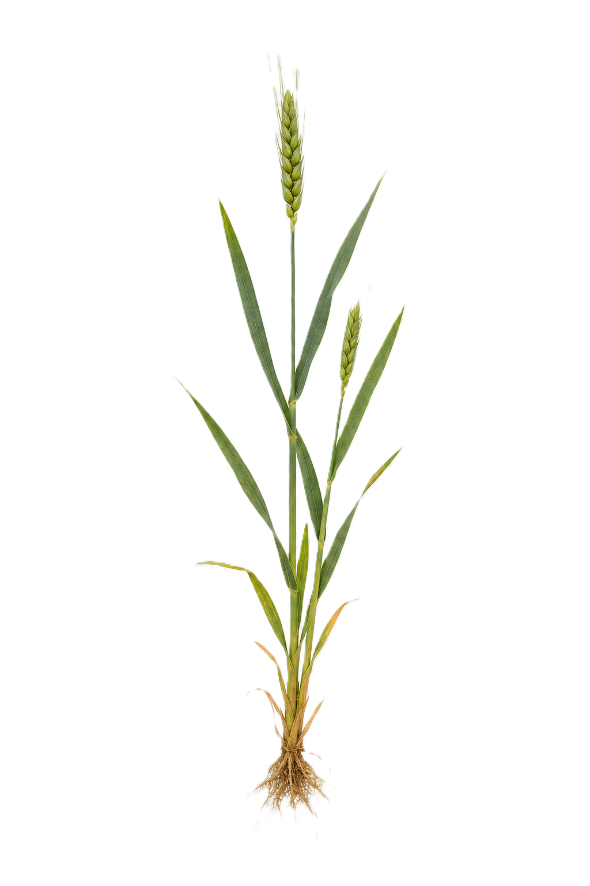

<!DOCTYPE html>
<html lang="zh">
<head>
<meta charset="UTF-8">
<meta name="viewport" content="width=device-width, initial-scale=1.0, maximum-scale=1.0, user-scalable=no">
<title>光合作用光反应与暗反应调控模拟（小麦生理模型）</title>
<script src="https://unpkg.com/react@18/umd/react.production.min.js" crossorigin></script>
<script src="https://unpkg.com/react-dom@18/umd/react-dom.production.min.js" crossorigin></script>
<script src="https://unpkg.com/@babel/standalone/babel.min.js"></script>
<script src="https://cdn.tailwindcss.com"></script>
<style>
  *, *::before, *::after { box-sizing: border-box; }
  html, body, #root { margin: 0; padding: 0; width: 100%; font-family: system-ui, -apple-system, sans-serif; overflow-x: hidden; }
  #root { display: flex; flex-direction: column; min-height: 100vh; }
  input[type="range"] { accent-color: #10B981; width: 100%; }
  
  .scroll-panel { overflow-y: auto; overflow-x: hidden; -webkit-overflow-scrolling: touch; }
  .scroll-panel::-webkit-scrollbar { width: 5px; }
  .scroll-panel::-webkit-scrollbar-thumb { background: #CBD5E1; border-radius: 3px; }
  .log-box { overflow-y: auto; overscroll-behavior: contain; -webkit-overflow-scrolling: touch; }
  .log-box::-webkit-scrollbar { width: 4px; }
  .log-box::-webkit-scrollbar-thumb { background: #334155; border-radius: 2px; }
  
  @keyframes alert-pulse { 0%,100%{filter:drop-shadow(0 0 16px rgba(239,68,68,.95));opacity:1}50%{filter:drop-shadow(0 0 6px rgba(239,68,68,.5));opacity:.7} }
  .animate-alert { animation: alert-pulse 1.5s infinite; }
  @keyframes dash-flow { from{stroke-dashoffset:36}to{stroke-dashoffset:0} }
  .animate-flow { animation: dash-flow 1.2s linear infinite; }
  .animate-flow-fast { animation: dash-flow 0.6s linear infinite; }
  @keyframes cef-flow { from{stroke-dashoffset:24}to{stroke-dashoffset:0} }
  .animate-cef { animation: cef-flow 0.8s linear infinite; }
  @keyframes day-night-indicator { 0%,100%{opacity:1}50%{opacity:.5} }
  .day-night-pulse { animation: day-night-indicator 2s infinite; }
  
  /* 宏观世界的环境动画特效 */
  @keyframes macro-fall {
      0% { transform: translateY(-50px); opacity: 0; }
      10% { opacity: 1; }
      80% { opacity: 1; }
      100% { transform: translateY(300px); opacity: 0; }
  }
  .animate-fall { animation: macro-fall 2.5s linear infinite; }
  .delay-1 { animation-delay: 0.8s; }
  .delay-2 { animation-delay: 1.6s; }

  /* 基础布局 */
  .header-bar { height: 55px; flex-shrink: 0; position: sticky; top: 0; z-index: 100; }
  .main-layout { display: flex; flex: 1; flex-direction: column; }
  .bottom-chart-container { height: 340px; } /* 提取底部高度为 CSS 类 */

  /* 中央视口内的 SVG / 宏观图统一约束 —— 默认无 max 限制，由 CSS 控制 */
  .center-svg { width: 100%; height: 100%; display: block; }
  .macro-image { width: auto; height: auto; max-width: 78%; max-height: 60%; object-fit: contain; }

  /* 电脑与希沃大屏适配（≥1024px 横屏布局） */
  @media (min-width: 1024px) {
    .main-layout { flex-direction: row; height: calc(100vh - 55px); flex: none; }
    .left-panel { width: 300px; min-width: 260px; max-width: 320px; height: 100%; }
    .right-panel { width: 360px; min-width: 300px; max-width: 400px; height: 100%; }
    /* 增加 min-width: 0 防止 Flex 子项溢出，保证 SVG 正常撑开 */
    .center-panel { flex: 1; height: 100%; overflow: hidden; display: flex; align-items: center; justify-content: center; position: relative; min-width: 0; }
    /* 1024~1599px：经典桌面，SVG 留出适度空白 */
    .center-svg { max-width: 1100px; max-height: 1100px; }
    .macro-image { max-width: 600px; max-height: 460px; }
  }

  /* 希沃 / 4K 大屏适配（≥1600px） —— 让 SVG 与宏观图按比例放大，避免居中后两侧大片空白 */
  @media (min-width: 1600px) {
    .left-panel { width: 340px; max-width: 360px; }
    .right-panel { width: 400px; max-width: 440px; }
    .center-svg { max-width: min(92%, 1500px); max-height: min(92%, 1500px); }
    .macro-image { max-width: min(70%, 900px); max-height: min(70%, 640px); }
    .bottom-chart-container { height: 360px; }
  }

  /* 超大屏 / 希沃 4K（≥2200px） */
  @media (min-width: 2200px) {
    .left-panel { width: 400px; max-width: 420px; }
    .right-panel { width: 460px; max-width: 480px; }
    .center-svg { max-width: min(90%, 1900px); max-height: min(90%, 1900px); }
    .macro-image { max-width: min(60%, 1100px); max-height: min(65%, 780px); }
    .bottom-chart-container { height: 400px; }
  }

  /* 手机端深度优化（<1024px 单列布局） */
  @media (max-width: 1023px) {
    .main-layout { display: flex; flex-direction: column; height: auto; }
    /* order: -1 把中央视口强制提到手机屏幕最上方 */
    .center-panel { order: -1; width: 100%; height: 50vh; min-height: 320px; max-height: 520px; position: relative; }
    .left-panel, .right-panel { width: 100%; max-width: 100%; height: auto; border: none; border-bottom: 1px solid #e2e8f0; padding: 10px; }
    .center-svg { max-width: 100%; max-height: 100%; }
    .macro-image { max-width: 80%; max-height: 50%; }
    /* 缩小手机端的底部图表占用空间 */
    .bottom-chart-container { height: 260px; padding: 10px; }
    /* 手机端 header 紧凑 */
    .header-bar { height: auto; min-height: 50px; padding: 6px 10px; }
    .header-bar .text-base { font-size: 14px; }
  }

  /* 超小手机（<640px） */
  @media (max-width: 639px) {
    .center-panel { height: 46vh; min-height: 280px; }
    .bottom-chart-container { height: 230px; padding: 8px; }
    .left-panel, .right-panel { padding: 8px; }
  }

  /* 手机横屏 */
  @media (max-width: 1023px) and (orientation: landscape) and (max-height: 500px) {
    .center-panel { height: 70vh; min-height: 240px; }
    .bottom-chart-container { height: 200px; }
  }
</style>
</head>
<body>
<div id="root"></div>
<script type="text/babel">
const { useState, useEffect, useRef, useMemo, useCallback } = React;

function calcEnzymeActivity(temp) {
  if(temp<=0)return 0.01; 
  if(temp<=15)return 0.1+((temp)/15)*0.5;      
  if(temp<=25)return 0.6+((temp-15)/10)*0.4;   
  if(temp<=32)return 1.0-((temp-25)/7)*0.3;    
  if(temp<=40)return 0.7-((temp-32)/8)*0.6;    
  if(temp<=50)return 0.1-((temp-40)/10)*0.1;   
  return 0;
}

// 气孔导度模型（0.1~1.0），控制CO2的实际吸收效率
function calcStomatalConductance(temp) {
  if (temp <= 5) return 0.1; 
  if (temp <= 15) return 0.1 + ((temp - 5) / 10) * 0.8; 
  if (temp <= 28) return 1.0; 
  if (temp <= 38) return 1.0 - ((temp - 28) / 10) * 0.8; 
  return 0.1; 
}

function calcRespiration(temp) {
  if(temp<=0)return 0.0508; 
  if(temp<=40)return 0.0508*Math.pow(2.23606,temp/10);
  if(temp<=50)return(0.0508*Math.pow(2.23606,4))*(1-((temp-40)/10)); return 0;
}

function calcWavelengthEff(wl){
  return {red: 0.85, blue: 0.65, green: 0.10, white: 1.0}[wl] ?? 1.0;
}

const INIT={atp:20,nadph:20,lumenH:40,stromaH:20,rubp:10,pga:12,g3p:5,pi:93,reserve:60, stomata:1};
const BASELINE_C=101, TOTAL_PI=150, MAX_HIST=300;

const INHIBITORS=[
  {id:'dcmu',name:'DCMU',target:'PSII→PQ',desc:'阻断PSII到PQ电子传递',emoji:'🧪'},
  {id:'dbmib',name:'DBMIB',target:'PQ→Cyt b6f',desc:'阻断PQ到Cyt b6f电子传递',emoji:'💊'},
  {id:'mv',name:'甲基紫精',target:'PSI电子受体',desc:'劫持PSI电子，产生超氧',emoji:'⚗️'},
  {id:'oligomycin',name:'寡霉素',target:'ATP合酶',desc:'阻断ATP合酶质子通道',emoji:'🔬'},
  {id:'iodoacetamide',name:'碘乙酰胺',target:'暗反应酶',desc:'抑制暗反应相关酶活性',emoji:'🧫'},
];

const BIO_POINTS = [
  { id:'lcp', label:'光补偿点', abbr:'LCP', emoji:'⚖️', color:'amber', desc:'净O₂释放=0', tip:'光合速率=呼吸速率', params:{ light:9.5, co2:400, temp:25, wavelength:'white' } },
  { id:'lsp', label:'光饱和点', abbr:'LSP', emoji:'☀️', color:'orange', desc:'增光不增产', tip:'光能已饱和', params:{ light:45, co2:400, temp:25, wavelength:'white' } },
  { id:'ccp', label:'CO₂补偿点', abbr:'CCP', emoji:'⚖️', color:'blue', desc:'净G3P输出=0', tip:'固碳产生=呼吸消耗', params:{ light:100, co2:50, temp:25, wavelength:'white' } },
  { id:'csp', label:'CO₂饱和点', abbr:'CSP', emoji:'💨', color:'cyan', desc:'增CO₂不增产', tip:'固碳速率达上限', params:{ light:100, co2:800, temp:25, wavelength:'white' } },
];

const BIOMES = [
  { id:'rainforest', name:'热带雨林', emoji:'🌴', desc:'闷热潮湿，夜间高温，全株呼吸极强', params:{ dayTemp: 34, nightTemp: 26, dayLen: 20000, nightLen: 10000, light: 70, co2: 450 } },
  { id:'desert', name:'热带沙漠', emoji:'🏜️', desc:'极端酷热光照，强致死性热胁迫', params:{ dayTemp: 44, nightTemp: 10, dayLen: 15000, nightLen: 15000, light: 95, co2: 380 } },
  { id:'tundra', name:'中低纬度高原', emoji:'❄️', desc:'高海拔低温，代谢缓慢', params:{ dayTemp: 12, nightTemp: 2, dayLen: 10000, nightLen: 20000, light: 30, co2: 400 } },
  { id:'temperate', name:'温带平原', emoji:'🌳', desc:'气候宜人，完美适宜小麦生长', params:{ dayTemp: 26, nightTemp: 16, dayLen: 15000, nightLen: 15000, light: 60, co2: 410 } },
];

const COLOR_MAP = { amber: { btn:'bg-amber-50 hover:bg-amber-100 border-amber-300 text-amber-800', badge:'bg-amber-100 text-amber-700', ring:'ring-amber-300' }, orange: { btn:'bg-orange-50 hover:bg-orange-100 border-orange-300 text-orange-800', badge:'bg-orange-100 text-orange-700', ring:'ring-orange-300' }, blue: { btn:'bg-blue-50 hover:bg-blue-100 border-blue-300 text-blue-800', badge:'bg-blue-100 text-blue-700', ring:'ring-blue-300' }, cyan: { btn:'bg-cyan-50 hover:bg-cyan-100 border-cyan-300 text-cyan-800', badge:'bg-cyan-100 text-cyan-700', ring:'ring-cyan-300' } };

const STOCK_METRICS = [ 
  { key:'atp', label:'ATP', color:'#F59E0B' }, 
  { key:'nadph', label:'NADPH', color:'#8B5CF6' }, 
  { key:'lumenH', label:'H⁺(腔内)', color:'#EF4444' }, 
  { key:'stromaH', label:'H⁺(基质)', color:'#3B82F6' }, 
  { key:'rubp', label:'C5(五碳糖)', color:'#F97316' }, 
  { key:'threePGA', label:'C3(三碳化合物)', color:'#94A3B8' }, 
  { key:'g3p', label:'G3P(三碳糖,循环内)', color:'#22D3EE' } 
];

const EQUATIONS = {
  water: { title: "水的光解 (光反应)", eq: "2H₂O ─光能, PSII─▶ 4H⁺ + 4e⁻ + O₂↑", desc: "在光系统II(PSII)中，水分子吸收光能被裂解，释放出氧气(O₂)、质子(H⁺)和电子(e⁻)。这是地球上绝大多数氧气的来源。" },
  atp: { title: "ATP 合成反应 (光反应)", eq: "ADP + Pi + 光能 ─酶─▶ ATP", desc: "在类囊体薄膜上，质子(H⁺)顺浓度梯度通过ATP合酶，释放的势能驱动ADP和Pi合成ATP，将光能转化为活跃的化学能。" },
  fnr: { title: "NADPH 合成反应 (光反应)", eq: "NADP⁺ + H⁺ + 2e⁻ ─酶─▶ NADPH", desc: "NADP⁺（辅酶Ⅱ）在类囊体膜外侧接受水光解产生的电子(e⁻)和基质中的质子(H⁺)，被还原为NADPH，作为暗反应的还原剂。" },
  co2: { title: "CO₂的固定 (暗反应)", eq: "CO₂ + C₅(五碳糖) ─酶─▶ 2 C₃(三碳化合物)", desc: "在叶绿体基质中，一分子CO₂与一分子C₅(五碳糖)结合，迅速生成两分子C₃(三碳化合物)。这是固碳的关键第一步。" },
  reduction: { title: "C₃的还原 (暗反应)", eq: "C₃(三碳化合物) ─酶,ATP,NADPH─▶ G3P(三碳糖)", desc: "C₃(三碳化合物)接受NADPH提供的氢和ATP提供的能量，被酶还原为G3P(三碳糖)。部分三碳糖将输出叶绿体用于合成蔗糖等有机物。" },
  regen: { title: "C₅的再生 (暗反应)", eq: "G3P(三碳糖) ─酶,ATP─▶ C₅(五碳糖)", desc: "循环内剩下的大部分G3P(三碳糖)经过一系列复杂的酶促反应，消耗ATP重新转化为C₅(五碳糖)，从而维持卡尔文循环的持续运转。" }
};

function BigChart({ fullHistory, simTime, onAnalyze }) {
  const containerRef = useRef(null);
  const [size, setSize] = useState({ w:800, h:200 });
  const [sel, setSel] = useState(null);
  const [dragging, setDragging] = useState(false);
  const dragStartX = useRef(null);

  useEffect(()=>{
    const el=containerRef.current; if(!el)return;
    const ro=new ResizeObserver(entries=>{
      for(const e of entries){
        const{width,height}=e.contentRect;
        if(width>0&&height>0)setSize({w:Math.floor(width),h:Math.floor(height)});
      }
    });
    ro.observe(el); return()=>ro.disconnect();
  },[]);

  const PAD={l:58,r:18,t:18,b:32};
  const plotW=size.w-PAD.l-PAD.r, plotH=size.h-PAD.t-PAD.b;

  const allV = fullHistory.length ? [...fullHistory.map(h=>h.o2Rate), ...fullHistory.map(h=>h.g3pRate)] : [0];
  const maxPos = Math.max(0.01, ...allV.filter(v => v >= 0));
  const maxNeg = Math.max(0.01, ...allV.filter(v => v < 0).map(v => Math.abs(v)));
  const NEG_FRAC = 0.35, POS_FRAC = 1 - NEG_FRAC;
  const posScale = (plotH * POS_FRAC) / (maxPos * 1.15), negScale = (plotH * NEG_FRAC) / (maxNeg * 1.15);
  const zeroY = PAD.t + plotH * POS_FRAC;

  const toY = useCallback(v => v >= 0 ? zeroY - v * posScale : zeroY + Math.abs(v) * negScale, [zeroY, posScale, negScale]);
  const toX = useCallback(i => PAD.l + (i / Math.max(1, fullHistory.length - 1)) * plotW, [PAD.l, plotW, fullHistory.length]);

  const yTicks = useMemo(() => {
    const ticks = [];
    for (let k = 1; k <= 3; k++) { const v = (maxPos * 1.15) * (k / 3); ticks.push({ y: zeroY - v * posScale, val: v.toFixed(2), side: 'pos' }); }
    for (let k = 1; k <= 3; k++) { const v = -(maxNeg * 1.15) * (k / 3); ticks.push({ y: zeroY + Math.abs(v) * negScale, val: v.toFixed(2), side: 'neg' }); }
    return ticks;
  }, [zeroY, posScale, negScale, maxPos, maxNeg]);

  const getX = useCallback(clientX => Math.max(PAD.l, Math.min(size.w - PAD.r, clientX - containerRef.current.getBoundingClientRect().left)), [PAD.l, PAD.r, size.w]);
  const xToIdx = useCallback(px => fullHistory.length < 2 ? 0 : Math.max(0, Math.min(fullHistory.length - 1, Math.round(((px - PAD.l) / plotW) * (fullHistory.length - 1)))), [PAD.l, plotW, fullHistory.length]);

  const finishSel = useCallback(endClientX => {
    const x1 = getX(endClientX), x0s = dragStartX.current;
    const lo = Math.min(x0s, x1), hi = Math.max(x0s, x1);
    setSel(null);
    if (hi - lo < 8) return;
    const i0 = xToIdx(lo), i1 = xToIdx(hi);
    if (i1 - i0 < 1) return;
    const slice = fullHistory.slice(i0, i1 + 1);
    onAnalyze(slice, [slice[0].time, slice[slice.length - 1].time]);
  }, [getX, xToIdx, fullHistory, onAnalyze]);

  const onMouseDown = e => { if(fullHistory.length<2)return; e.preventDefault(); const x=getX(e.clientX); dragStartX.current=x; setSel({startX:x,endX:x}); setDragging(true); };
  const onMouseMove = e => { if(!dragging)return; setSel({startX:dragStartX.current,endX:getX(e.clientX)}); };
  const onMouseUp   = e => { if(!dragging)return; setDragging(false); finishSel(e.clientX); };
  const onMouseLeave = () => { if(dragging){ setDragging(false); setSel(null); } };
  const onTouchStart = e => { if(fullHistory.length<2)return; const t=e.touches[0]; const x=getX(t.clientX); dragStartX.current=x; setSel({startX:x,endX:x}); setDragging(true); };
  const onTouchMove  = e => { if(!dragging)return; e.preventDefault(); const t=e.touches[0]; setSel({startX:dragStartX.current,endX:getX(t.clientX)}); };
  const onTouchEnd   = e => { if(!dragging)return; setDragging(false); finishSel(e.changedTouches[0].clientX); };

  const xTicks = useMemo(() => {
    if(fullHistory.length < 2) return [];
    const step = Math.max(1, Math.floor(fullHistory.length / 10)), r = [];
    for(let i = 0; i < fullHistory.length; i += step) r.push(i);
    if(r[r.length-1] !== fullHistory.length-1) r.push(fullHistory.length-1);
    return r;
  }, [fullHistory.length]);

  const cefRanges = useMemo(() => {
    const rs = []; let st = null;
    fullHistory.forEach((h, i) => { if(h.cef && st === null) st = i; if(!h.cef && st !== null){ rs.push([st, i-1]); st = null; } });
    if(st !== null) rs.push([st, fullHistory.length - 1]);
    return rs;
  }, [fullHistory]);

  const o2Pts  = useMemo(() => fullHistory.map((h,i) => `${toX(i).toFixed(1)},${toY(h.o2Rate).toFixed(1)}`).join(' '), [fullHistory,toX,toY]);
  const g3Pts  = useMemo(() => fullHistory.map((h,i) => `${toX(i).toFixed(1)},${toY(h.g3pRate).toFixed(1)}`).join(' '), [fullHistory,toX,toY]);
  const o2Area = fullHistory.length > 1 ? `${PAD.l},${zeroY} ${o2Pts} ${toX(fullHistory.length-1)},${zeroY}` : '';
  const selX0 = sel ? Math.min(sel.startX, sel.endX) : 0;
  const selW  = sel ? Math.abs(sel.endX - sel.startX) : 0;

  return (
    <div ref={containerRef} className="w-full h-full bg-slate-900 rounded-xl border border-slate-700 select-none" style={{ touchAction:'none', cursor: dragging ? 'col-resize' : 'crosshair' }} onMouseDown={onMouseDown} onMouseMove={onMouseMove} onMouseUp={onMouseUp} onMouseLeave={onMouseLeave} onTouchStart={onTouchStart} onTouchMove={onTouchMove} onTouchEnd={onTouchEnd}>
      <svg width={size.w} height={size.h} style={{display:'block',width:'100%',height:'100%'}}>
        <rect x={PAD.l} y={PAD.t} width={plotW} height={Math.max(0, zeroY - PAD.t)} fill="#10B981" opacity="0.04"/>
        <rect x={PAD.l} y={zeroY} width={plotW} height={Math.max(0, PAD.t + plotH - zeroY)} fill="#EF4444" opacity="0.06"/>
        <rect x={PAD.l} y={zeroY} width={plotW} height={Math.max(0, PAD.t + plotH - zeroY)} fill="#EF4444" opacity="0.04"/>
        {cefRanges.map(([s,e],idx) => <rect key={idx} x={toX(s)} y={PAD.t} width={Math.max(1,toX(e)-toX(s))} height={plotH} fill="#8B5CF6" opacity="0.08"/>)}
        {yTicks.map(({y, val, side}) => (
          <g key={val}>
            <line x1={PAD.l} y1={y} x2={size.w - PAD.r} y2={y} stroke={side === 'neg' ? '#2D1B1B' : '#1E293B'} strokeWidth="1" strokeDasharray={side === 'neg' ? '4,4' : ''}/>
            <text x={PAD.l - 5} y={y + 4} textAnchor="end" fill={side === 'neg' ? '#F87171' : '#64748B'} fontSize="10">{val}</text>
          </g>
        ))}
        <line x1={PAD.l} y1={zeroY} x2={size.w - PAD.r} y2={zeroY} stroke="#94A3B8" strokeWidth="2"/>
        <text x={PAD.l - 5} y={zeroY + 4} textAnchor="end" fill="#CBD5E1" fontSize="11" fontWeight="bold">0</text>
        {fullHistory.length > 0 && (PAD.t + plotH - zeroY) > 18 && (
          <text x={PAD.l + 4} y={PAD.t + plotH - 4} fill="#F87171" fontSize="9" opacity="0.7">← 净消耗（负值）</text>
        )}
        {xTicks.map(i => {
          const x = toX(i);
          return (
            <g key={i}>
              <line x1={x} y1={PAD.t + plotH} x2={x} y2={PAD.t + plotH + 5} stroke="#475569" strokeWidth="1"/>
              <text x={x} y={PAD.t + plotH + 17} textAnchor="middle" fill="#64748B" fontSize="10">{fullHistory[i].time.toFixed(0)}s</text>
            </g>
          );
        })}
        {fullHistory.length > 1 && (<>
          {o2Area && <polygon points={o2Area} fill="#10B981" opacity="0.08"/>}
          <polyline points={o2Pts} fill="none" stroke="#10B981" strokeWidth="2" strokeLinejoin="round"/>
          <polyline points={g3Pts} fill="none" stroke="#06B6D4" strokeWidth="2" strokeLinejoin="round"/>
        </>)}
        {fullHistory.length > 0 && (<>
          <circle cx={toX(fullHistory.length-1)} cy={toY(fullHistory[fullHistory.length-1].o2Rate)} r="4" fill="#10B981"/>
          <circle cx={toX(fullHistory.length-1)} cy={toY(fullHistory[fullHistory.length-1].g3pRate)} r="4" fill="#06B6D4"/>
        </>)}
        {sel && selW > 2 && (<>
          <rect x={selX0} y={PAD.t} width={selW} height={plotH} fill="#F59E0B" opacity="0.18"/>
          <line x1={selX0} y1={PAD.t} x2={selX0} y2={PAD.t + plotH} stroke="#F59E0B" strokeWidth="2"/>
          <line x1={selX0+selW} y1={PAD.t} x2={selX0+selW} y2={PAD.t + plotH} stroke="#F59E0B" strokeWidth="2"/>
          {selW > 50 && <text x={selX0+selW/2} y={PAD.t+14} textAnchor="middle" fill="#F59E0B" fontSize="11" fontWeight="bold">松开分析</text>}
        </>)}
        <text x={PAD.l + plotW / 2} y={size.h - 3} textAnchor="middle" fill="#64748B" fontSize="11" fontWeight="bold">时间 / s</text>
        <text x={13} y={PAD.t + plotH / 2} textAnchor="middle" fill="#64748B" fontSize="11" fontWeight="bold" transform={`rotate(-90,13,${PAD.t + plotH / 2})`}>速率</text>
        {fullHistory.length === 0 && <text x={size.w/2} y={size.h/2} textAnchor="middle" fill="#334155" fontSize="14">开始运行后数据将在此显示…</text>}
        <text x={size.w - PAD.r - 2} y={PAD.t + 11} textAnchor="end" fill="#475569" fontSize="9">＊负值轴已放大以便读图</text>
      </svg>
    </div>
  );
}

function AnalysisModal({ data, onClose, timeRange }) {
  const [showGroup, setShowGroup] = useState('rate');
  const [activeKeys, setActiveKeys] = useState(new Set());

  if(!data||!data.length)return null;
  const [t0,t1]=timeRange;
  const duration = t1 - t0;
  const TOO_MANY = data.length > 60;
  const rateM=[{key:'o2Rate',label:'净O₂释放速率',color:'#10B981'},{key:'g3pRate',label:'净G3P输出速率',color:'#06B6D4'}];
  const W=620,H=200,PL=50,PR=14,PT=20,PB=28;
  const pw=W-PL-PR, ph=H-PT-PB;

  const rateAllV=rateM.flatMap(m=>data.map(d=>d[m.key]||0));
  const rateYMin=Math.min(0,...rateAllV)*1.1, rateYMax=Math.max(0.01,...rateAllV)*1.1;
  const rateToX=i=>PL+(i/Math.max(1,data.length-1))*pw;
  const rateToY=v=>PT+ph-((v-rateYMin)/(rateYMax-rateYMin||1))*ph;

  const stockAllV=STOCK_METRICS.flatMap(m=>data.map(d=>d[m.key]||0));
  const stockYMax=Math.max(1,...stockAllV)*1.1;
  const stockToX=i=>PL+(i/Math.max(1,data.length-1))*pw;
  const stockToY=v=>PT+ph-((v-0)/(stockYMax||1))*ph;

  const toggleKey = (key) => { setActiveKeys(prev => { const next = new Set(prev); if(next.has(key)) next.delete(key); else next.add(key); return next; }); };
  const resetKeys = () => setActiveKeys(new Set());
  const isVisible = (key) => activeKeys.size === 0 || activeKeys.has(key);

  const analyze=()=>{
    if(TOO_MANY) return['⚠️ 所选区间过长，包含较多数据，难以精确分析。建议缩小选取范围后重试。'];
    const r=[], f=data[0], l=data[data.length-1];
    const d=k=>(l[k]||0)-(f[k]||0);
    const o=d('o2Rate');
    if(o>0.01) r.push(`📈 净O₂释放速率升高，推测光照增强（或光质改变），光合速率加快。`);
    else if(o<-0.01) r.push(`📉 净O₂释放速率下降，推测光照减弱（或光质改变），光合速率受到限制。`);
    const g=d('g3pRate');
    if((l.g3pRate||0)<0&&(f.g3pRate||0)>0) r.push(`🔄 G3P(三碳糖)净输出由正转负，有机物积累速率低于呼吸消耗，植物整体净消耗有机物。`);
    const a=d('atp');
    if(a<-3) r.push(`⚠️ ATP减少明显，光反应合成ATP的速率低于暗反应消耗速率，暗反应可能受阻。`);
    else if(a>3) r.push(`✅ ATP增多，光反应产生ATP较充足，暗反应供能充裕。`);
    const n=d('nadph');
    if(n>5) r.push(`📊 NADPH有所积累。可能原因：①光照增强，光反应产生NADPH加快；②CO₂不足或气孔关闭，C3(三碳化合物)减少，消耗NADPH变慢；③两者共同作用。`);
    if(n<-5) r.push(`📊 NADPH明显减少。可能原因：①光照减弱，光反应产生NADPH减慢②C3(三碳化合物)还原加速消耗，推测暗反应C3还原较活跃。`);
    const rb=d('rubp');
    if(rb<-3) r.push(`🔻 C5（五碳糖）减少，CO₂供应充足，CO₂固定消耗C5的速率大于C5再生速率，可能暗反应中固碳较旺盛。`);
    if(rb>3) r.push(`🔺 C5（五碳糖）积累，固碳速率慢，C5不能及时被消耗。可能由于外界CO₂浓度不足或异常温度导致气孔关闭。`);
    const p=d('threePGA');
    if(p>5) r.push(`📈 C3(三碳化合物)增多。可能原因：①CO₂增多，固碳加速产生C3；②ATP或NADPH不足，C3还原减慢导致积累。`);
    if(p<-5) r.push(`📉 C3(三碳化合物)减少。可能原因：①CO₂供应受限（外部减少或气孔关闭），固碳减慢，C3生成减少；②C3还原加快，消耗增多。`);
    if(!r.length) r.push('该时段各指标变化不明显，光合作用处于相对稳态。');
    return r;
  };
  const analyses=analyze();

  return (
    <div className="fixed inset-0 z-[200] bg-black/70 flex items-center justify-center p-3" onClick={onClose}>
      <div className="bg-white rounded-2xl shadow-2xl w-full max-w-2xl max-h-[92vh] overflow-y-auto" onClick={e=>e.stopPropagation()}>
        <div className="sticky top-0 bg-white border-b border-slate-200 px-5 py-3 flex justify-between items-center rounded-t-2xl">
          <h2 className="text-base font-bold text-slate-800">📊 区段分析 {t0.toFixed(1)}s ~ {t1.toFixed(1)}s（{duration.toFixed(1)}s）</h2>
          <button onClick={onClose} className="px-3 py-1 rounded-lg bg-slate-200 hover:bg-slate-300 text-sm font-bold">✕</button>
        </div>
        <div className="p-4 space-y-4">
          {TOO_MANY && (
            <div className="bg-amber-50 border border-amber-300 rounded-xl px-4 py-3 text-amber-800 text-sm font-medium flex items-start gap-2">
              <span className="text-lg shrink-0">⚠️</span>
              <div>
                <div className="font-bold">选取范围过大（{data.length} 个数据点）</div>
                <div className="text-xs mt-0.5 text-amber-700">建议在时间轴上缩小拖拽范围，选取较短的片段以获得更精确的分析。</div>
              </div>
            </div>
          )}
          <div className="flex gap-2">
            <button onClick={()=>setShowGroup('rate')} className={`px-3 py-1.5 rounded-lg text-sm font-bold transition ${showGroup==='rate'?'bg-emerald-500 text-white':'bg-slate-100 hover:bg-slate-200'}`}>📈 速率指标</button>
            <button onClick={()=>setShowGroup('stock')} className={`px-3 py-1.5 rounded-lg text-sm font-bold transition ${showGroup==='stock'?'bg-indigo-500 text-white':'bg-slate-100 hover:bg-slate-200'}`}>📦 库存指标</button>
          </div>
          {showGroup==='rate'&&(
            <div className="bg-slate-50 rounded-xl border overflow-hidden">
              <svg width="100%" viewBox={`0 0 ${W} ${H}`}>
                {[0,.25,.5,.75,1].map(f=>{
                  const y=PT+f*ph, v=(rateYMax-f*(rateYMax-rateYMin)).toFixed(2);
                  return<g key={f}><line x1={PL} y1={y} x2={W-PR} y2={y} stroke="#E2E8F0" strokeWidth="1"/><text x={PL-5} y={y+4} textAnchor="end" fill="#64748B" fontSize="10">{v}</text></g>;
                })}
                <line x1={PL} y1={rateToY(0)} x2={W-PR} y2={rateToY(0)} stroke="#94A3B8" strokeWidth="1.5" strokeDasharray="4,4"/>
                {rateM.map(m=><polyline key={m.key} points={data.map((d,i)=>`${rateToX(i)},${rateToY(d[m.key]||0)}`).join(' ')} fill="none" stroke={m.color} strokeWidth="2" strokeLinejoin="round"/>)}
                {data.filter((_,i)=>i%Math.max(1,Math.floor(data.length/6))===0||i===data.length-1).map(d=>{
                  const i=data.indexOf(d);
                  return<text key={i} x={rateToX(i)} y={H-3} textAnchor="middle" fill="#64748B" fontSize="10">{d.time.toFixed(1)}s</text>;
                })}
              </svg>
              <div className="flex flex-wrap gap-3 px-4 py-2 border-t border-slate-200">
                {rateM.map(m=><span key={m.key} className="flex items-center gap-1.5 text-xs font-medium text-slate-700"><span className="inline-block w-4 h-1.5 rounded" style={{background:m.color}}/>{m.label}</span>)}
              </div>
            </div>
          )}
          {showGroup==='stock'&&(
            <div className="space-y-2">
              <div className="bg-slate-50 rounded-xl border overflow-hidden">
                <svg width="100%" viewBox={`0 0 ${W} ${H}`}>
                  {[0,.25,.5,.75,1].map(f=>{
                    const y=PT+f*ph, v=(stockYMax-f*stockYMax).toFixed(0);
                    return<g key={f}><line x1={PL} y1={y} x2={W-PR} y2={y} stroke="#E2E8F0" strokeWidth="1"/><text x={PL-5} y={y+4} textAnchor="end" fill="#64748B" fontSize="10">{v}</text></g>;
                  })}
                  {STOCK_METRICS.map(m=>(
                    <polyline key={m.key} points={data.map((d,i)=>`${stockToX(i)},${stockToY(d[m.key]||0)}`).join(' ')} fill="none" stroke={m.color} strokeWidth={activeKeys.has(m.key) ? 3 : 1.8} strokeLinejoin="round" opacity={isVisible(m.key) ? 1 : 0.08} style={{transition:'opacity 0.2s, stroke-width 0.2s'}}/>
                  ))}
                  {data.filter((_,i)=>i%Math.max(1,Math.floor(data.length/6))===0||i===data.length-1).map(d=>{
                    const i=data.indexOf(d);
                    return<text key={i} x={stockToX(i)} y={H-3} textAnchor="middle" fill="#64748B" fontSize="10">{d.time.toFixed(1)}s</text>;
                  })}
                </svg>
              </div>
              <div className="flex flex-wrap gap-1.5 px-1 items-center">
                {STOCK_METRICS.map(m=>{
                  const on = activeKeys.has(m.key);
                  return (
                    <button key={m.key} onClick={()=>toggleKey(m.key)} className={`flex items-center gap-1 px-2 py-1 rounded-lg text-xs font-bold border transition-all ${on ? 'text-white shadow-md scale-105 border-transparent' : activeKeys.size > 0 ? 'border-slate-200 bg-slate-100 text-slate-400 hover:bg-slate-200' : 'border-slate-200 bg-white text-slate-700 hover:bg-slate-50'}`} style={on ? {background: m.color, borderColor: m.color} : {}}>
                      <span className="w-2 h-2 rounded-full inline-block shrink-0" style={{background: m.color}}/>{m.label}
                    </button>
                  );
                })}
                <button onClick={resetKeys} className="flex items-center gap-1 px-2 py-1 rounded-lg text-xs font-bold border border-slate-300 bg-slate-100 hover:bg-slate-200 text-slate-600 transition-all">🔄 重置</button>
              </div>
              <div className="text-xs text-slate-500 px-1">
                {activeKeys.size === 0 ? <span className="text-slate-400">全部组分显示中，点击按钮可选择显示特定折线，可多选</span> : <span>当前显示：{STOCK_METRICS.filter(m=>activeKeys.has(m.key)).map((m,i)=>(<span key={m.key} className="font-bold ml-1" style={{color:m.color}}>{m.label}{i<activeKeys.size-1?'、':''}</span>))}</span>}
              </div>
              {activeKeys.has('g3p') && <div className="text-xs text-cyan-600 px-1">💡 G3P（三碳糖）：仅统计叶绿体基质内循环中的G3P，不含已输出的部分。</div>}
            </div>
          )}
          <div className="bg-emerald-50 rounded-xl border border-emerald-200 p-3 space-y-1.5">
            <div className="font-bold text-xs text-emerald-800 mb-1">📖 分析报告</div>
            {analyses.map((a,i)=><p key={i} className="text-xs text-emerald-900 leading-relaxed">{a}</p>)}
          </div>
        </div>
      </div>
    </div>
  );
}

function App() {
  const [isAdvanced, setIsAdvanced] = useState(false); // 认知减负：分阶模式状态

  const [light,setLight]=useState(50);
  const [wavelength,setWavelength]=useState('white');
  const [co2,setCo2]=useState(400);
  const [temp,setTemp]=useState(25); 
  const [stomata,setStomata]=useState(1.0);
  const [speed,setSpeed]=useState(1);
  const [phase,setPhase]=useState('init');
  const [simTime,setSimTime]=useState(0);
  const [dayMode,setDayMode]=useState('day');
  const [autoPhase,setAutoPhase]=useState('day');
  const [inhibitors,setInhibitors]=useState({});
  const [activeBioPoint,setActiveBioPoint]=useState(null);
  const [activeBiome, setActiveBiome] = useState(null);
  const [showManual, setShowManual] = useState(false);

  const [atp,setAtp]=useState(INIT.atp);
  const [nadph,setNadph]=useState(INIT.nadph);
  const [lumenH,setLumenH]=useState(INIT.lumenH);
  const [stromaH,setStromaH]=useState(INIT.stromaH);
  const [rubp,setRubp]=useState(INIT.rubp);
  const [pga,setPga]=useState(INIT.pga);
  const [g3p,setG3p]=useState(INIT.g3p);
  const [freePi,setFreePi]=useState(INIT.pi);
  const [reserve,setReserve]=useState(INIT.reserve);
  const [enzHealth,setEnzHealth]=useState(1.0);
  const [enzAct,setEnzAct]=useState(calcEnzymeActivity(25));
  const [enzIrreversible,setEnzIrreversible]=useState(false); 
  const [cefOn,setCefOn]=useState(false);
  const [g3pOut,setG3pOut]=useState(0);
  const [o2Rate,setO2Rate]=useState(0);
  const [respRate,setRespRate]=useState(0);
  const [netG3pRate,setNetG3pRate]=useState(0);
  const [respG3pRate,setRespG3pRate]=useState(0);
  const [elecPos,setElecPos]=useState(0);
  const [atpAngle,setAtpAngle]=useState(0);
  const [photons,setPhotons]=useState([]);
  const [bubbles,setBubbles]=useState([]);
  const [macroBubbles, setMacroBubbles] = useState([]);
  const [logs,setLogs]=useState([]);
  const [rateHist,setRateHist]=useState(Array(30).fill(0));
  const [g3pRateHist,setG3pRateHist]=useState(Array(30).fill(0));
  const [fullHist,setFullHist]=useState([]);
  const [anaData,setAnaData]=useState(null);
  const [anaRange,setAnaRange]=useState([0,0]);
  const [prePhase,setPrePhase]=useState(null);
  
  const [tip,setTip]=useState({show:false,x:0,y:0,text:''});
  const showTip=useCallback((e,t)=>setTip({show:true,x:e.clientX+16,y:e.clientY-18,text:t}),[]);
  const hideTip=useCallback(()=>setTip(p=>({...p,show:false})),[]);
  
  const [eqPopup, setEqPopup] = useState(null);
  const [showMacro, setShowMacro] = useState(false);

  const logBoxRef=useRef(null);
  const rafRef=useRef(null);
  const lastTRef=useRef(0);
  const logIdRef=useRef(0);
  const [cefProg,setCefProg]=useState(0);

  const s=useRef({
    ...INIT,lumenH:INIT.lumenH,stromaH:INIT.stromaH,pi:INIT.pi, reserve:INIT.reserve,
    time:0, dayTimer:0, isDay:true, enzHealth:1, enzIrreversible:false, cef:false,g3pOut:0,elecPos:0,atpAngle:0,
    o2a:0,ra:0,g3pa:0,rga:0,rt:0,photonT:0,bubbleT:0, macroBubbleT:0,
    temp: 25, targetTemp: 25, 
    wn:{temp:'normal',pi:false,light:false,nadp:false,grad:false,co2:false,rubp:false,fb:false,atp:false,sink:false,starve:false,stomata:false},
    cefOnT:0,cefOffT:0, loggedCef:false, loggedCefOff:false, isDead:false,
    overrides: { light: null, temp: null, co2: null }
  }).current;

  // 当切换回基础模式时，清空抑制剂，防止防呆错误
  useEffect(() => {
    if (!isAdvanced) {
      setInhibitors({});
    }
  }, [isAdvanced]);

  const addLog=useCallback((type,text)=>{
    setLogs(prev=>{
      const next=[...prev,{id:logIdRef.current++,time:s.time,text,type}];
      if(next.length>100)next.shift();return next;
    });
  },[]);

  useEffect(()=>{
    const box=logBoxRef.current;if(!box)return;
    const near=box.scrollHeight-box.scrollTop-box.clientHeight<60;
    if(near)box.scrollTop=box.scrollHeight;
  },[logs]);

  useEffect(()=>{
    if(dayMode==='day')setLight(50);
    else if(dayMode==='night')setLight(0);
  },[dayMode]);

  useEffect(()=>{
    if(!cefOn||phase!=='running'||light===0)return;
    let raf,last=performance.now();
    const loop=ts=>{const dt=(ts-last)/1000;last=ts;setCefProg(p=>(p+dt*0.8)%1);raf=requestAnimationFrame(loop);};
    raf=requestAnimationFrame(loop);return()=>cancelAnimationFrame(raf);
  },[cefOn,phase,light]);

  const getCefPos=t=>({ x:(1-t)*(1-t)*760+2*(1-t)*t*600+t*t*450, y:(1-t)*(1-t)*330+2*(1-t)*t*150+t*t*260 });

  const handleReset=()=>{
    setLight(50);setWavelength('white');setCo2(400);setTemp(25);setStomata(1.0);
    setSpeed(1);setPhase('init');setSimTime(0);setDayMode('day');setInhibitors({});setActiveBioPoint(null);setActiveBiome(null);
    setAtp(INIT.atp);setNadph(INIT.nadph);setLumenH(INIT.lumenH);setStromaH(INIT.stromaH);
    setRubp(INIT.rubp);setPga(INIT.pga);setG3p(INIT.g3p);setFreePi(INIT.pi);setEnzHealth(1);setEnzIrreversible(false);setReserve(INIT.reserve);
    setCefOn(false);setG3pOut(0);setO2Rate(0);setRespRate(0);setNetG3pRate(0);setRespG3pRate(0);
    setElecPos(0);setAtpAngle(0);setPhotons([]);setBubbles([]);setMacroBubbles([]);setEqPopup(null);
    setLogs([]);setRateHist(Array(30).fill(0));setG3pRateHist(Array(30).fill(0));setFullHist([]);setAnaData(null);
    Object.assign(s,{
      ...INIT,lumenH:INIT.lumenH,stromaH:INIT.stromaH,pi:INIT.pi, reserve:INIT.reserve,
      time:0, dayTimer:0, isDay:true, enzHealth:1, enzIrreversible:false, cef:false,g3pOut:0,elecPos:0,atpAngle:0,
      o2a:0,ra:0,g3pa:0,rga:0,rt:0,photonT:0,bubbleT:0, macroBubbleT:0,
      temp: 25, targetTemp: 25,
      wn:{temp:'normal',pi:false,light:false,nadp:false,grad:false,co2:false,rubp:false,fb:false,atp:false,sink:false,starve:false,stomata:false},
      cefOnT:0,cefOffT:0, loggedCef:false, loggedCefOff:false, isDead:false,
      overrides: { light: null, temp: null, co2: null }
    });
    addLog('info','系统已重置。');
  };

  const handleToggle=()=>{
    if(phase==='running'){setPhase('paused');addLog('info','已暂停。');}
    else if(phase==='dead'){handleReset();}
    else{setPhase('running');addLog('info',`运行中 (${speed}x)`);}
  };

  const applyBioPoint=useCallback(pt=>{
    setActiveBioPoint(pt.id);
    setLight(pt.params.light);setCo2(pt.params.co2);
    setTemp(pt.params.temp);
    s.targetTemp = pt.params.temp; s.temp = pt.params.temp; 
    setWavelength(pt.params.wavelength);
    setDayMode(pt.params.light>0?'day':'night');
    s.overrides.light = pt.params.light;
    s.overrides.temp = pt.params.temp;
    s.overrides.co2 = pt.params.co2;
    addLog('info',`[${s.time.toFixed(1)}s] 📐 ${pt.label}：光照${pt.params.light}%, CO₂${pt.params.co2}ppm, ${pt.params.temp}°C`);
  },[addLog, s]);

  useEffect(()=>{setActiveBioPoint(null);},[light,co2,wavelength]);

  const quickAction=action=>{
    if(phase!=='running')return;
    const t=s.time.toFixed(1);
    ({
      dark:()=>{setLight(0);setDayMode('night');s.overrides.light=0;addLog('warning',`[${t}s] ⚡ 突然熄灯`);},
      noCO2:()=>{setCo2(0);s.overrides.co2=0;addLog('warning',`[${t}s] 💨 移除外部CO₂`);},
      heat:()=>{setTemp(45);s.targetTemp=45;s.temp=45;s.overrides.temp=45;addLog('danger',`[${t}s] 🔥 瞬间高温胁迫`);},
      green:()=>{setWavelength('green');addLog('info',`[${t}s] 🌿 切换绿光`);},
    }[action])?.();
  };

  const toggleInh=id=>{
    setInhibitors(prev=>{
      const next={...prev};
      const ih=INHIBITORS.find(i=>i.id===id);
      if(next[id]){delete next[id];addLog('info',`[${s.time.toFixed(1)}s] 🧪 移除${ih.name}`);}
      else{next[id]=true;addLog('danger',`[${s.time.toFixed(1)}s] 🧪 添加${ih.name}！${ih.desc}`);}
      return next;
    });
  };

  const showEq = (e, key) => {
    e.stopPropagation();
    setEqPopup({ key, x: e.clientX, y: e.clientY });
    hideTip();
  };

  useEffect(()=>{
    if(phase!=='running')return;
    lastTRef.current=performance.now();
    const loop=ts=>{
      const rdt=Math.min((ts-lastTRef.current)/1000, 0.1); 
      lastTRef.current=ts;
      tick(rdt*speed, rdt); 
      rafRef.current=requestAnimationFrame(loop);
    };
    rafRef.current=requestAnimationFrame(loop);
    return()=>{if(rafRef.current)cancelAnimationFrame(rafRef.current);};
  },[phase,light,wavelength,co2,speed,inhibitors, dayMode, activeBiome]);

  const tick=(totalDt, rdt)=>{
    if(s.isDead) return;
    
    s.photonT += totalDt;
    setPhotons(prev=>{
      let nx=prev.map(p=>({...p,x:p.x+(208-p.x)*rdt*2,y:p.y+(280-p.y)*rdt*2,life:p.life-rdt})).filter(p=>p.life>0);
      if(light>0&&s.photonT>0.2){
          s.photonT=0;
          const c=Math.floor(light/20)+1;
          nx=[...nx,...Array.from({length:c},(_,i)=>({id:Date.now()+i+Math.random(),x:20+Math.random()*80,y:50+Math.random()*60,life:2}))].slice(-80);
      }
      return nx;
    });

    let stepGrossO2 = 0; 
    let stepNetO2 = 0; 
    let stepRespO2 = 0; 
    let currentEa = 0; 

    const MAX_STEP = 0.02; 
    const steps = Math.ceil(totalDt / MAX_STEP);
    if(steps === 0) return;
    const dt = totalDt / steps;

    for (let stepIdx = 0; stepIdx < steps; stepIdx++) {
        if (s.isDead) break;

        if (dayMode === 'auto') {
          s.dayTimer += dt;
          const b = BIOMES.find(x => x.id === activeBiome);
          const dLen = (b ? b.params.dayLen : 15000) / 1000; 
          const nLen = (b ? b.params.nightLen : 10000) / 1000;

          if (s.isDay && s.dayTimer >= dLen) {
            s.isDay = false;
            s.dayTimer -= dLen;
            setAutoPhase('night');
            
            const nextLight = s.overrides.light !== null ? s.overrides.light : 0;
            const nextTemp = s.overrides.temp !== null ? s.overrides.temp : (b ? b.params.nightTemp : 25);
            const nextCo2 = s.overrides.co2 !== null ? s.overrides.co2 : (b ? b.params.co2 : 400);
            
            setLight(nextLight); setCo2(nextCo2);
            s.targetTemp = nextTemp; 
            addLog('info',`[${(s.time+dt).toFixed(1)}s] 🌙 自动昼夜交替：进入黑夜${b && s.overrides.temp === null ? ` (气温将逐渐降至${nextTemp}°C)`:''}`);
          } else if (!s.isDay && s.dayTimer >= nLen) {
            s.isDay = true;
            s.dayTimer -= nLen;
            setAutoPhase('day');
            
            const nextLight = s.overrides.light !== null ? s.overrides.light : (b ? b.params.light : 50);
            const nextTemp = s.overrides.temp !== null ? s.overrides.temp : (b ? b.params.dayTemp : 25);
            const nextCo2 = s.overrides.co2 !== null ? s.overrides.co2 : (b ? b.params.co2 : 400);

            setLight(nextLight); setCo2(nextCo2);
            s.targetTemp = nextTemp; 
            addLog('info',`[${(s.time+dt).toFixed(1)}s] ☀️ 自动昼夜交替：进入白天${b && s.overrides.temp === null ? ` (气温将逐渐升至${nextTemp}°C)`:''}`);
          }
        }

        s.time += dt;
        const inh = inhibitors;

        if (s.overrides.temp !== null && s.targetTemp !== s.overrides.temp) {
            s.targetTemp = s.overrides.temp;
            s.temp = s.targetTemp; 
        }
        if (Math.abs(s.temp - s.targetTemp) > 0.01) {
            s.temp += (s.targetTemp - s.temp) * Math.min(1.0, dt * 0.3);
        }

        const currentTemp = s.temp;
        const currentStomata = calcStomatalConductance(currentTemp); 
        const actualCo2 = co2 * currentStomata; 
        
        if (currentStomata <= 0.3 && !s.wn.stomata) {
            addLog('warning', `[${s.time.toFixed(1)}s] 🍂 气温极端，植物气孔大幅关闭以减少水分散失，CO₂供应严重受阻！`);
            s.wn.stomata = true;
        } else if (currentStomata >= 0.8 && s.wn.stomata) {
            addLog('info', `[${s.time.toFixed(1)}s] 🌬️ 气温适宜，气孔重新打开，CO₂通道恢复。`);
            s.wn.stomata = false;
        }

        if(currentTemp>=48) {
          s.enzHealth=Math.max(0, s.enzHealth-(currentTemp-45)*0.02*dt);
          if(s.wn.temp!=='extreme'){addLog('danger',`[${s.time.toFixed(1)}s] 💀 极端高温！酶开始完全变性失活`);s.wn.temp='extreme';}
        } else if(currentTemp>=38) {
          s.enzHealth=Math.max(0, s.enzHealth-(currentTemp-35)*0.002*dt);
          if(s.wn.temp!=='high'){addLog('warning',`[${s.time.toFixed(1)}s] 🔥 高温胁迫！酶受抑且正在流失活性`);s.wn.temp='high';}
        } else {
          if(s.enzHealth<1 && !s.enzIrreversible) {
            s.enzHealth=Math.min(1, s.enzHealth+0.05*dt);
            if(s.wn.temp!=='normal' && s.wn.temp){addLog('info',`[${s.time.toFixed(1)}s] 🌡️ 温度适宜，酶活性逐渐恢复`);s.wn.temp='normal';}
          } else if (s.enzIrreversible && s.wn.temp!=='normal' && s.wn.temp!=='irreversible') {
            addLog('danger',`[${s.time.toFixed(1)}s] 🌡️ 温度虽降，但酶蛋白结构已遭不可逆破坏，无法恢复！`);
            s.wn.temp='irreversible';
          }
        }

        if (!s.enzIrreversible && s.enzHealth <= 0.25) {
          s.enzIrreversible = true;
          addLog('danger', `[${s.time.toFixed(1)}s] 💥 致命损伤：酶蛋白失活超过75%，发生不可逆变性！`);
        }
        
        const ea=calcEnzymeActivity(currentTemp)*s.enzHealth;
        currentEa = ea; 
        
        const boundPi=s.atp+s.rubp*2+s.pga+s.g3p;s.pi=Math.max(0,TOTAL_PI-boundPi);
        if(s.pi<=10){if(!s.wn.pi){addLog('danger',`[${s.time.toFixed(1)}s] ⚠️ 无机磷不足！`);s.wn.pi=true;}}
        else if(s.pi>35){if(s.wn.pi){addLog('info',`[${s.time.toFixed(1)}s] ♻️ 无机磷回升`);s.wn.pi=false;}}
        
        const rr=calcRespiration(currentTemp),respO2=rr*dt;
        s.ra+=respO2;
        stepRespO2 += respO2; 
        
        const eff=(light/100)*calcWavelengthEff(wavelength);
        const nadpA=Math.max(0,Math.min(1,(40-s.nadph)/10));
        if(light===0){if(!s.wn.light){addLog('warning',`[${s.time.toFixed(1)}s] ⚡ 光源关闭`);s.wn.light=true;}}
        else{if(s.wn.light){addLog('info',`[${s.time.toFixed(1)}s] ☀️ 光照恢复`);s.wn.light=false;}}
        if(nadpA<=0.05&&light>0){if(!s.wn.nadp){addLog('warning',`[${s.time.toFixed(1)}s] ⚠️ NADP⁺不足，光反应减速`);s.wn.nadp=true;}}
        else if(nadpA>0.3){if(s.wn.nadp){addLog('info',`[${s.time.toFixed(1)}s] ⚡ NADP⁺恢复`);s.wn.nadp=false;}}
        const dcF=inh.dcmu?0:1,dbF=inh.dbmib?0:1,mvF=inh.mv?0.1:1,olF=inh.oligomycin?0:1,ioF=inh.iodoacetamide?0.05:1;
        const baseFlow = 16 * eff * ea * dcF * dbF * mvF;
        
        const lef = baseFlow * Math.max(0.01, nadpA);
        const piA = Math.max(0.05, Math.min(1, s.pi / 50));
        
        s.nadph += lef * 1.5 * dt;
        s.lumenH += lef * 6 * dt;
        s.stromaH -= lef * 2 * dt;
        
        const prevCef = s.cef;
        if(s.atp < 5 && light > 0 && s.time > 1) s.cef = true;
        else if(s.atp > 15) s.cef = false;
        
        if(s.cef && !prevCef && !s.loggedCef){ addLog('info',`[${s.time.toFixed(1)}s] 🔄 ATP不足，开启循环电子传递 (单独补充ATP)`); s.loggedCef=true; }
        if(!s.cef && prevCef && s.loggedCef && !s.loggedCefOff){ addLog('info',`[${s.time.toFixed(1)}s] ✅ ATP已达标，关闭循环电子传递`); s.loggedCefOff=true; }

        let cefR = 0;
        if(s.cef && light > 0){
            cefR = baseFlow * 0.4; 
            s.lumenH += cefR * 6 * dt; 
            s.stromaH -= cefR * 2 * dt;
        }
        setCefOn(s.cef);
        const grossO2=lef*0.25*dt,netO2=grossO2-respO2;s.o2a+=netO2;
        stepGrossO2 += grossO2; 
        stepNetO2 += netO2;

        const hR=s.lumenH/Math.max(0.1,s.stromaH);let atpP=0,hM=0;
        if(hR>1){const gF=s.lumenH-s.stromaH;hM=Math.min(gF*1.5*piA*olF*dt,s.lumenH*0.4);atpP=hM/3;}
        if(hR<=1.05&&s.time>2){if(!s.wn.grad){addLog('warning',`[${s.time.toFixed(1)}s] ⚠️ 质子梯度不足，ATP合成减慢`);s.wn.grad=true;}}
        else if(hR>1.5){if(s.wn.grad){addLog('info',`[${s.time.toFixed(1)}s] ⚡ 质子梯度恢复`);s.wn.grad=false;}}
        s.lumenH-=hM;s.stromaH+=hM;s.atp+=atpP;
        const visualSpeed = s.cef ? 0.35 : 1.0;
        if(lef>0||cefR>0){s.elecPos=(s.elecPos+(lef+cefR)*5*visualSpeed*dt);if(s.elecPos>100)s.elecPos=0;}
        if(dt>0)s.atpAngle=(s.atpAngle+(hM/dt)*12*dt)%360;

        if(actualCo2<5){if(!s.wn.co2){addLog('warning',`[${s.time.toFixed(1)}s] 💨 实际可用CO₂耗尽，暗反应停止`);s.wn.co2=true;}}
        else{if(s.wn.co2){addLog('info',`[${s.time.toFixed(1)}s] 💨 实际CO₂供应恢复`);s.wn.co2=false;}}
        if(s.rubp<=0.1){if(!s.wn.rubp){addLog('warning',`[${s.time.toFixed(1)}s] ⚠️ C5(五碳糖)耗尽`);s.wn.rubp=true;}}
        else if(s.rubp>4){if(s.wn.rubp){addLog('info',`[${s.time.toFixed(1)}s] ✅ C5(五碳糖)恢复`);s.wn.rubp=false;}}
        const fbI=Math.max(0,Math.min(1,(s.pi-2)/20));
        if(fbI<0.9){if(!s.wn.fb){addLog('info',`[${s.time.toFixed(1)}s] 🛡️ 产物抑制触发，暗反应减速`);s.wn.fb=true;}}
        else if(fbI>=0.99&&s.pi>35){if(s.wn.fb){addLog('info',`[${s.time.toFixed(1)}s] ✅ 产物抑制解除`);s.wn.fb=false;}}
        
        const fixed=Math.min((actualCo2/400)*ea*5*fbI*ioF*dt,s.rubp);
        s.rubp-=fixed;s.pga+=fixed*2;
        if(s.atp<=0.1&&s.pga>1){if(!s.wn.atp){addLog('warning',`[${s.time.toFixed(1)}s] ⚠️ ATP不足，C3(三碳化合物)还原停滞`);s.wn.atp=true;}}
        else if(s.atp>5){if(s.wn.atp){addLog('info',`[${s.time.toFixed(1)}s] ⚡ ATP恢复，暗反应重启`);s.wn.atp=false;}}
        const red=Math.min(s.pga*ea*1.5*ioF*dt,s.atp,s.nadph,s.pga);
        s.pga-=red;s.g3p+=red;s.atp-=red;s.nadph-=red;
        const grossG3p=red/6,respG3p=respO2/1.875,netG3p=grossG3p-respG3p;
        s.g3pOut+=netG3p;s.g3pa+=netG3p;s.rga+=respG3p;
        
        const maintRate = 0.35 * Math.pow(2.5, (currentTemp - 25) / 10);
        const maintenance = maintRate * dt;

        let stress = 0;
        if (currentTemp >= 36) {
            stress = Math.pow(currentTemp - 35, 1.5) * 0.06 * dt; 
        } else if (currentTemp <= 8) {
            stress = (8 - currentTemp) * 0.02 * dt;               
        }

        let carbonIncome = 0;
        let deficitDrain = 0;
        if (netG3p > 0) {
            carbonIncome = netG3p * 1.2; 
        } else {
            deficitDrain = Math.abs(netG3p) * 1.5; 
        }

        let actualIncome = 0;
        if (carbonIncome > 0) {
            let eff = 1.0;
            if (s.reserve >= 98) {
                eff = 0.0;
            } else if (s.reserve > 50) {
                eff = 1.0 - Math.pow((s.reserve - 50) / 48, 2); 
            }
            actualIncome = carbonIncome * eff;
        }

        const netChange = actualIncome - maintenance - stress - deficitDrain;
        s.reserve = Math.max(0, Math.min(100, s.reserve + netChange));

        if (netChange < -0.5 * dt && s.reserve <= 30 && !s.wn.starve) {
             addLog('danger', `[${s.time.toFixed(1)}s] ⚠️ 警告：全株处于严重赤字状态，有机物极速枯竭！`);
             s.wn.starve = true;
        } else if (s.reserve > 30 && s.wn.starve) {
             s.wn.starve = false;
        }

        if (s.reserve <= 0) {
          s.reserve = 0;
          s.isDead = true;
          addLog('danger', `[${s.time.toFixed(1)}s] 💀 植物因入不敷出耗尽有机物，宣告枯死。`);
          setPhase('dead'); 
        }

        if(s.g3p>=6){
          const cyc=Math.floor(s.g3p/6);s.g3p-=cyc*6;
          const ac=Math.min(cyc,Math.floor(s.atp/3));
          if(ac>0){s.atp-=ac*3;s.rubp+=ac*3;s.g3p+=(cyc-ac)*6+ac;}else s.g3p+=cyc*6;
        }
        const totC=s.rubp*5+s.pga*3+s.g3p*3;
        if(totC>BASELINE_C&&s.g3p>2){
          const exp=Math.min(((totC-BASELINE_C)/3)*1.5*dt,s.g3p-2);s.g3p-=exp;
          if(!s.wn.sink&&s.time>2&&exp>0.01){addLog('info',`[${s.time.toFixed(1)}s] 🔄 糖类物质向叶绿体外输出`);s.wn.sink=true;}
        }else if(totC<BASELINE_C-2)s.wn.sink=false;
        
        s.rt += dt;
    } 

    s.o2VisAccum = (s.o2VisAccum || 0) + stepGrossO2;

    setBubbles(prev => {
        const vSpeed = Math.max(1, speed * 0.8); 
        
        let nx = prev.map(b => {
            const newLife = b.life - rdt * vSpeed;
            const age = b.initialLife - newLife;
            return {
                ...b,
                x: b.startX + Math.sin(age * 5) * 12, 
                y: b.startY - 100 * age,              
                life: newLife
            };
        }).filter(b => b.life > 0);

        const O2_PER_BUBBLE = 0.1;
        let spawnCount = Math.floor(s.o2VisAccum / O2_PER_BUBBLE);

        if (spawnCount > 0) {
            s.o2VisAccum -= spawnCount * O2_PER_BUBBLE;
            spawnCount = Math.min(spawnCount, 8);
            
            for(let i = 0; i < spawnCount; i++){
                const sx = 210 + (Math.random() - 0.5) * 20;
                nx.push({
                    id: Date.now() + Math.random() + i, 
                    startX: sx,
                    startY: 220 + (Math.random() * 5), 
                    x: sx,
                    y: 220,
                    life: 2.0 + Math.random(), 
                    initialLife: 2.5
                });
            }
        }
        
        const maxDOM = speed > 2 ? 30 : 60;
        return nx.slice(-maxDOM);
    });

    s.macroBubbleT += totalDt;
    setMacroBubbles(prev => {
        const vSpeed = Math.max(1, speed * 0.8); 
        
        let nx = prev.map(b => {
            const newLife = b.life - rdt * vSpeed; 
            const age = b.initialLife - newLife;
            
            let curX = b.startX + (b.vx || 0) * age;
            let curY = b.startY + (b.vy || 0) * age;

            if (b.type === 'release') {
                curX += Math.sin(age * 3) * 3; 
            }

            return {
                ...b,
                x: curX,
                y: curY,
                life: newLife
            };
        }).filter(b => b.life > 0);
        
        const avgGrossO2Rate = totalDt > 0 ? stepGrossO2 / totalDt : 0;
        const avgRespO2Rate  = totalDt > 0 ? stepRespO2  / totalDt : 0;
        
        const spawnInterval = 0.25 * Math.max(1, speed * 0.5); 
        
        if (s.macroBubbleT > spawnInterval) {
            s.macroBubbleT = 0;
            const maxSpawns = speed > 1 ? 1 : 2;
            
            if (avgRespO2Rate > 0) { 
                const respChance = avgRespO2Rate * 1.5; 
                let respCount = Math.floor(respChance) + (Math.random() < (respChance % 1) ? 1 : 0);
                respCount = Math.min(respCount, maxSpawns);
                
                for (let i = 0; i < respCount; i++) {
                    const isLeft = Math.random() > 0.5;
                    const sx = isLeft ? -10 - Math.random() * 5 : 110 + Math.random() * 5; 
                    const sy = 5 + Math.random() * 70; 
                    const dx = 50 - sx, dy = 60 - sy;
                    const len = Math.sqrt(dx*dx + dy*dy);
                    const moveSpeed = 20 + Math.random() * 10;
                    const baseLife = (len / moveSpeed) + 0.1;
                    
                    nx.push({
                        id: Date.now() + Math.random(),
                        startX: sx,
                        startY: sy,
                        x: sx,
                        y: sy,
                        vx: (dx/len) * moveSpeed,
                        vy: (dy/len) * moveSpeed,
                        life: baseLife,
                        initialLife: baseLife,
                        type: 'absorb'
                    });
                }
            }

            if (avgGrossO2Rate > 0) {
                const grossChance = avgGrossO2Rate * 0.3; 
                let grossCount = Math.floor(grossChance) + (Math.random() < (grossChance % 1) ? 1 : 0);
                grossCount = Math.min(grossCount, maxSpawns);
                
                for (let i = 0; i < grossCount; i++) {
                    const sx = 40 + Math.random() * 20;
                    const sy = 55 + Math.random() * 10;
                    nx.push({ 
                        id: Date.now() + Math.random(), 
                        startX: sx,
                        startY: sy,
                        x: sx,
                        y: sy,
                        vx: (Math.random() - 0.5) * 1.5,
                        vy: -15 - Math.random() * 5, 
                        life: 6, 
                        initialLife: 6,
                        type: 'release'
                    });
                }
            }
        }
        
        const maxDOM = speed > 2 ? 20 : 40;
        return nx.slice(-maxDOM);
    });

    if(s.rt >= 1){
      const no2=s.o2a/s.rt,nr=s.ra/s.rt,ng=s.g3pa/s.rt,nrg=s.rga/s.rt;
      setO2Rate(Math.abs(no2)<0.005?0:no2);setRespRate(nr);
      setNetG3pRate(Math.abs(ng)<0.005?0:ng);setRespG3pRate(nrg);
      
      if(s.time > 2.5) {
        setRateHist(p=>[...p.slice(1),no2]);setG3pRateHist(p=>[...p.slice(1),ng]);
        setFullHist(p=>{
          const e={time:s.time,o2Rate:no2,g3pRate:ng,
            atp:s.atp,nadph:s.nadph,lumenH:s.lumenH,stromaH:s.stromaH,
            rubp:s.rubp,threePGA:s.pga,g3p:s.g3p,cef:s.cef};
          const nx=[...p,e];if(nx.length>MAX_HIST)nx.shift();return nx;
        });
      }
      s.o2a=0;s.ra=0;s.g3pa=0;s.rga=0;s.rt=0;
    }
    
    s.atp=Math.max(0,Math.min(40,s.atp));s.nadph=Math.max(0,Math.min(40,s.nadph));
    s.lumenH=Math.max(0,Math.min(80,s.lumenH));s.stromaH=Math.max(0,Math.min(40,s.stromaH));
    s.rubp=Math.max(0,s.rubp);s.pga=Math.max(0,s.pga);s.g3p=Math.max(0,s.g3p);
    
    setTemp(s.temp); 
    setStomata(calcStomatalConductance(s.temp));

    setEnzAct(currentEa); 
    setAtp(s.atp);setNadph(s.nadph);setLumenH(s.lumenH);setStromaH(s.stromaH);
    setRubp(s.rubp);setPga(s.pga);setG3p(s.g3p);setG3pOut(s.g3pOut);setFreePi(s.pi);
    setEnzIrreversible(s.enzIrreversible);
    setReserve(s.reserve);
    setElecPos(s.elecPos);setAtpAngle(s.atpAngle);setSimTime(s.time);
  };

  const handleAnalyze=useCallback((slice,range)=>{
    setPrePhase(phase);if(phase==='running')setPhase('paused');
    setAnaData(slice);setAnaRange(range);
  },[phase]);

  const closeAna=()=>{
    setAnaData(null);if(prePhase==='running')setPhase('running');setPrePhase(null);
  };

  const getElecCoord=pos=>{
    if(pos<20)return{x:208+(pos/20)*(325-208),y:300-(pos/20)*20};
    if(pos<40)return{x:325+((pos-20)/20)*(450-325),y:280};
    if(pos<60)return{x:450+((pos-40)/20)*(560-450),y:280-((pos-40)/20)*40};
    if(pos<80)return{x:560+((pos-60)/20)*(700-560),y:240+((pos-60)/20)*60};
    return{x:700+((pos-80)/20)*(820-700),y:300+((pos-80)/20)*20};
  };
  const ep=getElecCoord(elecPos);
  const lDots=useMemo(()=>Array.from({length:Math.min(60,Math.floor(lumenH*1.5))},(_,i)=>({x:50+((i*97)%900),y:20+((i*53)%200)})),[Math.floor(lumenH)]);
  const sDots=useMemo(()=>Array.from({length:Math.min(40,Math.floor(stromaH*1.5))},(_,i)=>({x:50+((i*83)%900),y:360+((i*61)%520)})),[Math.floor(stromaH)]);

  const isDark=light===0,isNoCo2=(co2*stomata)<5;
  const isAtpLow=phase==='running'&&atp<1&&pga>1;
  const isNadphLow=phase==='running'&&nadph<1&&pga>1;
  const isRubpLow=phase==='running'&&rubp<0.5;
  const isPiLow=phase==='running'&&freePi<30;
  const hRatio=lumenH/Math.max(0.1,stromaH);
  
  const co2R=Math.max(30,Math.min(58,30+((co2*stomata)/1000)*28));
  
  const allSm=[...rateHist,...g3pRateHist];
  const maxSm=Math.max(0.01,...allSm.map(v=>Math.abs(v)));
  const ZY=56,SC=Math.min(50/maxSm,500);
  const smY=v=>ZY-v*SC;

  const terrainMap = {
      temperate: { bg: 'from-blue-300 to-emerald-400', icon: '🌳', text: '平原' },
      rainforest: { bg: 'from-emerald-700 to-green-900', icon: '🌴', text: '雨林' },
      desert: { bg: 'from-amber-200 to-orange-400', icon: '🌵', text: '沙漠' },
      tundra: { bg: 'from-slate-300 to-sky-200', icon: '🏔️', text: '苔原' }
  };
  const curTerrain = terrainMap[activeBiome] || { bg: 'from-slate-200 to-slate-400', icon: '🏢', text: '实验室' };
  const sunColors = { white: '#FDE047', red: '#FCA5A5', blue: '#93C5FD', green: '#86EFAC' };

  const renderEqBtn = (x, y, label, eqKey) => (
    <g transform={`translate(${x},${y})`} style={{cursor:'pointer'}}
      onMouseMove={e => showTip(e, EQUATIONS[eqKey].title)}
      onMouseLeave={hideTip}
      onClick={e => { e.stopPropagation(); showEq(e, eqKey); }}>
      <rect x="-42" y="-13" width="84" height="26" rx="6" fill="#0F172A" opacity="0.8"/>
      <rect x="-42" y="-13" width="84" height="26" rx="6" fill="none" stroke="#475569" strokeWidth="1"/>
      <text x="0" y="4" textAnchor="middle" fill="#94A3B8" fontSize="11" fontWeight="bold">{label}</text>
    </g>
  );

  return (
    <div className="flex flex-col w-full min-h-screen bg-slate-100 relative">
      {tip.show&&(
        <div className="fixed z-[300] bg-slate-800 text-emerald-300 text-xs font-bold px-3 py-1.5 rounded-lg shadow-xl pointer-events-none"
          style={{left:tip.x+14,top:tip.y-42,maxWidth:200}}>{tip.text}</div>
      )}
      {anaData&&<AnalysisModal data={anaData} onClose={closeAna} timeRange={anaRange}/>}

      {eqPopup && (
        <div className="fixed z-[500] bg-white rounded-xl shadow-[0_10px_40px_rgba(0,0,0,0.2)] border-2 border-amber-400 p-4 pointer-events-none transform -translate-x-1/2 -translate-y-[115%]"
             style={{ left: eqPopup.x, top: eqPopup.y, minWidth: 320, maxWidth: 380 }}>
           <div className="absolute -bottom-2.5 left-1/2 transform -translate-x-1/2 w-4 h-4 bg-white border-b-2 border-r-2 border-amber-400 rotate-45"></div>
           <div className="text-sm font-bold text-amber-600 mb-2 border-b border-amber-100 pb-1">{EQUATIONS[eqPopup.key].title}</div>
           <div className="bg-slate-50 p-2.5 rounded-lg border border-slate-200 font-mono text-center text-[13px] font-bold text-slate-800 mb-2 tracking-tight">
              {EQUATIONS[eqPopup.key].eq}
           </div>
           <div className="text-xs text-slate-600 leading-relaxed text-justify">
              {EQUATIONS[eqPopup.key].desc}
           </div>
        </div>
      )}

      {showManual && (
        <div className="fixed inset-0 z-[1000] bg-black/70 flex items-center justify-center p-4 backdrop-blur-sm" onClick={() => setShowManual(false)}>
          <div className="bg-white rounded-2xl shadow-2xl w-full max-w-3xl max-h-[85vh] flex flex-col" onClick={e => e.stopPropagation()}>
            <div className="flex justify-between items-center p-4 border-b border-slate-200 shrink-0 bg-slate-50 rounded-t-2xl">
              <h2 className="text-lg font-bold text-slate-800 flex items-center gap-2">📖 小麦光合作用全景模拟平台 —— 学生实验操作手册</h2>
              <button onClick={() => setShowManual(false)} className="w-8 h-8 flex items-center justify-center rounded-full bg-slate-200 hover:bg-slate-300 text-slate-700 font-bold transition-colors">✕</button>
            </div>
            <div className="p-6 overflow-y-auto space-y-6 text-sm text-slate-700 leading-relaxed scroll-panel">
              <p>欢迎进入光合作用虚拟实验室！本平台将帮助你穿梭于“宏观植株”与“微观叶绿体”之间，亲手操控环境参数，探究植物能量转换与物质代谢的奥秘。</p>
              
              <section>
                <h3 className="text-base font-bold text-indigo-700 mb-2 border-l-4 border-indigo-500 pl-2">一、 认知分阶：基础与进阶</h3>
                <ul className="list-disc pl-5 space-y-1">
                  <li><strong>基础模式（默认）：</strong> 隐藏了微观分子细节。你可以专注于调节光强、温度、CO₂等宏观环境，观察它们如何影响植物的气孔导度以及最终的“生命储备”。</li>
                  <li><strong>进阶探究模式：</strong> 当你掌握了宏观规律后，可以点击顶部切换到进阶模式。此时将解锁药物阻断剂、跨膜质子梯度、以及ATP/NADPH等详细的微观分子库存面板，供你探究电子传递链的深层机制。</li>
                </ul>
              </section>

              <section>
                <h3 className="text-base font-bold text-emerald-700 mb-2 border-l-4 border-emerald-500 pl-2">二、 视界切换：宏观与微观</h3>
                <ul className="list-disc pl-5 space-y-1">
                  <li><strong>微观世界（叶绿体基质与类囊体）：</strong> 直观看到光反应与暗反应的动态偶联。</li>
                  <li><strong>宏观世界（植株状态）：</strong> 点击左上角 “🌍 进入宏观世界观测”，可以直观查看整体环境变化对小麦整株生长状态的影响。</li>
                </ul>
              </section>

              <section>
                <h3 className="text-base font-bold text-amber-600 mb-2 border-l-4 border-amber-500 pl-2">三、 数据监测与生命指标</h3>
                <ul className="list-disc pl-5 space-y-2">
                  <li><strong>生命储备（有机物积累）：</strong> ⭐ 这是植物生存的核心指标！光合产出长期低于呼吸消耗，储备归零，植物将枯死。</li>
                  <li><strong>光合速率监控：</strong> 实时监控光合速率，可以用鼠标或者触控的方式拖选片段，进行分析，注意：尽量保证所选片段曲线是单调的。</li>
                </ul>
              </section>
            </div>
          </div>
        </div>
      )}

      <div className="header-bar bg-white border-b border-slate-200 flex flex-wrap items-center justify-between px-4 py-2 shrink-0 shadow-sm gap-2">
        <div className="flex flex-wrap items-center gap-3">
          <span className="text-base font-bold text-slate-800 whitespace-nowrap">🌿 光合作用调控模拟</span>
          
          {/* 认知减负：模式切换开关 */}
          <div className="flex items-center p-0.5 bg-slate-100 rounded-lg border border-slate-200 shadow-inner">
            <button onClick={() => setIsAdvanced(false)} className={`px-3 py-1 text-xs font-bold rounded-md transition-all ${!isAdvanced ? 'bg-white text-emerald-700 shadow-sm border border-slate-200/50' : 'text-slate-500 hover:text-slate-700'}`}>
              🌱 基础模式
            </button>
            <button onClick={() => setIsAdvanced(true)} className={`px-3 py-1 text-xs font-bold rounded-md transition-all ${isAdvanced ? 'bg-indigo-500 text-white shadow-sm' : 'text-slate-500 hover:text-slate-700'}`}>
              🔬 进阶探究
            </button>
          </div>

          <div className="flex items-center gap-1 bg-slate-100 px-2 py-1 rounded border border-slate-200">
            <span className="text-xs text-slate-500 font-bold mr-1">倍速:</span>
            {[1,2,4,6].map(sp=>(
              <button key={sp} onClick={()=>setSpeed(sp)} className={`px-1.5 py-0.5 text-xs rounded font-mono transition ${speed===sp?'bg-indigo-500 text-white':'hover:bg-slate-300 text-slate-600'}`}>{sp}x</button>
            ))}
          </div>
        </div>
        <div className="flex gap-2">
          <button onClick={() => setShowManual(true)} className="px-3 py-1.5 text-xs rounded bg-blue-50 hover:bg-blue-100 text-blue-700 font-bold border border-blue-200">📖 操作手册</button>
          <button onClick={handleReset} className="px-3 py-1.5 text-xs rounded bg-slate-200 hover:bg-slate-300 text-slate-700 font-medium border border-slate-300">🔄 重置</button>
          <button onClick={handleToggle} className={`px-4 py-1.5 text-sm rounded text-white font-bold shadow ${phase==='running'?'bg-amber-500 hover:bg-amber-600':phase==='dead'?'bg-slate-500 hover:bg-slate-600':'bg-emerald-500 hover:bg-emerald-600'}`}>
            {phase==='running'?'⏸ 暂停':phase==='dead'?'🔄 重新种植':'▶ 开始'}
          </button>
        </div>
      </div>

      <div className="main-layout">
        <div className="left-panel scroll-panel bg-white border-r border-slate-200 p-3 space-y-3 shrink-0">
          <section className="space-y-2">
            <h3 className="text-sm font-bold text-amber-700 pb-1 border-b border-amber-100">☀️ 光反应参数</h3>
            <div>
              <div className="flex justify-between text-xs mb-1">
                <span className="text-slate-600">光照强度</span>
                <span className="font-mono font-bold text-amber-600">{light}%</span>
              </div>
              <input type="range" min="0" max="100" value={light}
                onChange={e=>{
                    const v = +e.target.value;
                    setLight(v);
                    s.overrides.light = v; 
                    if(dayMode!=='auto') setDayMode(v>0?'day':'night');
                }}/>
            </div>
            <div>
              <div className="text-xs text-slate-600 mb-1">光谱波长</div>
              <div className="grid grid-cols-2 gap-1">
                {[{id:'red',lbl:'🔴 红光 660nm',sc:'border-red-400 bg-red-50 text-red-700'},
                  {id:'blue',lbl:'🔵 蓝光 450nm',sc:'border-blue-400 bg-blue-50 text-blue-700'},
                  {id:'green',lbl:'🟢 绿光 550nm',sc:'border-green-400 bg-green-50 text-green-700'},
                  {id:'white',lbl:'⚪ 白光 全光谱',sc:'border-slate-300 bg-slate-50 text-slate-700'},
                ].map(w=>(
                  <label key={w.id} className={`flex items-center gap-1 p-1.5 border rounded-lg cursor-pointer text-xs transition-all ${wavelength===w.id?w.sc+' font-bold ring-1':'border-slate-200 text-slate-600 hover:bg-slate-50'}`}>
                    <input type="radio" name="wl" value={w.id} checked={wavelength===w.id} onChange={e=>setWavelength(e.target.value)} className="hidden"/>
                    {w.lbl}
                  </label>
                ))}
              </div>
            </div>
          </section>

          <section className="space-y-2">
            <h3 className="text-sm font-bold text-indigo-700 pb-1 border-b border-indigo-100">🌑 暗反应参数</h3>
            <div>
              <div className="flex justify-between text-xs mb-1">
                <span className="text-slate-600">外部CO₂ (ppm)</span>
                <span className="font-mono font-bold text-indigo-600">{co2}</span>
              </div>
              <input type="range" min="0" max="1000" value={co2} 
                onChange={e=>{
                    const v = +e.target.value;
                    setCo2(v);
                    s.overrides.co2 = v; 
                }}/>
            </div>
            <div>
              <div className="flex justify-between text-xs mb-1">
                <div className="flex items-center gap-1">
                  <span className="text-slate-600">温度 (°C)</span>
                  {enzHealth<0.99&&<span className={`text-[10px] px-1 rounded border ${enzIrreversible ? 'text-purple-600 border-purple-300 bg-purple-50 font-bold' : 'text-red-500 border-red-200 bg-red-50'}`}>
                    {enzIrreversible ? '不可逆变性' : '酶受抑'} {(100-enzHealth*100).toFixed(0)}%
                  </span>}
                </div>
                <span className="font-mono font-bold text-red-500">{temp.toFixed(1)}°C</span>
              </div>
              <input type="range" min="0" max="50" step="0.5" value={temp} 
                onChange={e=>{
                    const v = +e.target.value;
                    setTemp(v); 
                    s.overrides.temp = v; 
                }}/>
            </div>
          </section>

          <section className="space-y-2">
            <h3 className="text-sm font-bold text-emerald-700 pb-1 border-b border-emerald-100">📐 经典特征点</h3>
            <div className="grid grid-cols-2 gap-1.5">
              {BIO_POINTS.map(pt=>{
                const cm=COLOR_MAP[pt.color];
                const isActive=activeBioPoint===pt.id;
                return (
                  <button key={pt.id} onClick={()=>applyBioPoint(pt)}
                    onMouseMove={e=>showTip(e,pt.tip)} onMouseLeave={hideTip}
                    className={`relative flex flex-col items-start p-2 rounded-xl border-2 text-left transition-all ${
                      isActive?cm.btn+' ring-2 '+cm.ring+' shadow-md':'bg-slate-50 hover:bg-slate-100 border-slate-200 text-slate-700'
                    }`}>
                    {isActive&&<span className={`absolute top-1 right-1 text-[9px] font-bold px-1 py-0.5 rounded-full ${cm.badge}`}>当前</span>}
                    <div className="text-sm">{pt.emoji}</div>
                    <div className="text-xs font-bold leading-tight mt-0.5">{pt.label}</div>
                    <div className="text-[10px] text-slate-500 mt-0.5 leading-tight">{pt.desc}</div>
                  </button>
                );
              })}
            </div>
          </section>

          <section className="space-y-2">
            <h3 className="text-sm font-bold text-slate-700 pb-1 border-b border-slate-100">🌗 昼夜模式</h3>
            <div className="grid grid-cols-3 gap-1">
              {[{id:'day',icon:'☀️',lbl:'白天'},{id:'night',icon:'🌙',lbl:'黑夜'},{id:'auto',icon:'🔄',lbl:'自动'}].map(m=>(
                <button key={m.id} onClick={()=>{
                    setDayMode(m.id);
                    if(m.id !== 'auto') {
                      setActiveBiome(null);
                    } else {
                      s.overrides.light = null;
                      s.overrides.temp = null;
                      s.overrides.co2 = null;
                      setActiveBioPoint(null);
                    }
                  }}
                  className={`py-2 rounded-lg border text-xs font-bold transition-all text-center ${dayMode===m.id?'bg-indigo-100 text-indigo-800 border-indigo-300 ring-1 ring-indigo-300':'bg-slate-50 hover:bg-slate-100 border-slate-200 text-slate-600'} ${m.id==='auto'&&dayMode==='auto'?'day-night-pulse':''}`}>
                  <div>{m.icon}</div><div>{m.lbl}</div>
                </button>
              ))}
            </div>
            {dayMode==='auto'&&(
              <div className="text-[10px] text-violet-600 bg-violet-50 px-2 py-1 rounded border border-violet-200">
                当前: {autoPhase==='day'?'☀️ 白天':'🌙 黑夜'} {activeBiome&&`(${BIOMES.find(b=>b.id===activeBiome).name})`}
              </div>
            )}
          </section>

          <section className="space-y-2">
            <h3 className="text-sm font-bold text-sky-700 pb-1 border-b border-sky-100">🌍 地理生境模拟</h3>
            <div className="grid grid-cols-2 gap-1.5">
              {BIOMES.map(b=>{
                const isActive = activeBiome === b.id && dayMode === 'auto';
                return (
                  <button key={b.id} onClick={()=>{
                      s.overrides.light = null;
                      s.overrides.temp = null;
                      s.overrides.co2 = null;
                      
                      setActiveBiome(b.id);
                      setDayMode('auto');
                      setActiveBioPoint(null);
                      
                      s.dayTimer = 0;
                      s.isDay = true;
                      setAutoPhase('day');
                      setLight(b.params.light);
                      setCo2(b.params.co2);
                      s.targetTemp = b.params.dayTemp; 
                      
                      addLog('info', `[${s.time.toFixed(1)}s] 🌍 载入生境：${b.name} (已开启气候平滑过渡)`);
                    }}
                    className={`relative flex flex-col items-start p-2 rounded-xl border transition-all text-left ${
                      isActive?'bg-sky-50 border-sky-400 ring-2 ring-sky-300 shadow-md':'bg-slate-50 hover:bg-slate-100 border-slate-200 text-slate-700'
                    }`}>
                    <div className="text-sm">{b.emoji} <span className="font-bold text-xs">{b.name}</span></div>
                    <div className="text-[10px] text-slate-500 mt-0.5 leading-tight">{b.desc}</div>
                  </button>
                );
              })}
            </div>
          </section>

          <section className="space-y-2">
            <h3 className="text-sm font-bold text-slate-700 pb-1 border-b border-slate-100">🧪 快速实验</h3>
            <div className="grid grid-cols-2 gap-1.5">
              {[{a:'dark',lbl:'⚡ 突然熄灯',cls:'bg-slate-100 text-slate-700 hover:bg-slate-200'},
                {a:'noCO2',lbl:'💨 移除CO₂',cls:'bg-slate-100 text-slate-700 hover:bg-slate-200'},
                {a:'heat',lbl:'🔥 高温胁迫',cls:'bg-red-50 text-red-700 hover:bg-red-100'},
                {a:'green',lbl:'🌿 绿光切换',cls:'bg-green-50 text-green-700 hover:bg-green-100'},
              ].map(({a,lbl,cls})=>(
                <button key={a} onClick={()=>quickAction(a)} disabled={phase!=='running'}
                  className={`text-xs p-1.5 rounded-lg border border-slate-200 transition disabled:opacity-40 ${cls}`}>
                  {lbl}
                </button>
              ))}
            </div>
          </section>

          {/* 进阶模式专属：药物阻断剂 */}
          {isAdvanced && (
            <section className="space-y-2">
              <h3 className="text-sm font-bold text-red-700 pb-1 border-b border-red-100">💊 药物阻断剂</h3>
              <div className="space-y-1">
                {INHIBITORS.map(ih=>(
                  <button key={ih.id} onClick={()=>toggleInh(ih.id)} disabled={phase!=='running'}
                    className={`w-full text-left p-2 rounded-lg border transition-all disabled:opacity-40 ${inhibitors[ih.id]?'bg-red-50 border-red-300 ring-1 ring-red-200':'bg-slate-50 hover:bg-slate-100 border-slate-200'}`}>
                    <div className="flex justify-between items-center">
                      <span className="text-xs font-bold text-slate-800">{ih.emoji} {ih.name}</span>
                      <span className={`text-[10px] px-1.5 py-0.5 rounded font-bold ${inhibitors[ih.id]?'bg-red-200 text-red-700':'bg-slate-200 text-slate-500'}`}>
                        {inhibitors[ih.id]?'已添加':'未添加'}
                      </span>
                    </div>
                    <div className="text-[10px] text-slate-400 mt-0.5 leading-tight">{ih.target} — {ih.desc}</div>
                  </button>
                ))}
              </div>
            </section>
          )}

        </div>

        {/* 核心中间面板 */}
        <div className={`center-panel relative w-full h-full transition-colors duration-500 ${showMacro ? 'bg-slate-900' : 'bg-[#022C22]'}`} onClick={() => setEqPopup(null)}>
          
          {showMacro ? (
            /* ================= 宏观世界视图 ================= */
            <div className="absolute inset-0 flex flex-col items-center justify-center overflow-hidden">
                
                <div className="absolute inset-0 pointer-events-none transition-colors duration-1000 z-10" style={{
                    backgroundColor: light === 0 ? 'rgba(0,0,0,0.85)' :
                                     wavelength === 'red' ? 'rgba(239,68,68,0.15)' :
                                     wavelength === 'blue' ? 'rgba(59,130,246,0.15)' :
                                     wavelength === 'green' ? 'rgba(34,197,94,0.15)' : 'transparent',
                    mixBlendMode: 'multiply'
                }} />
                {temp > 35 && <div className="absolute inset-0 bg-red-500/20 mix-blend-color-burn z-10 pointer-events-none transition-all duration-1000" />}
                {temp < 10 && <div className="absolute inset-0 bg-blue-500/20 mix-blend-screen z-10 pointer-events-none transition-all duration-1000" />}

                <div className={`absolute inset-0 z-0 bg-gradient-to-b ${curTerrain.bg} transition-colors duration-1000 opacity-70 flex items-end justify-around pb-[10%]`}>
                    {[...Array(6)].map((_, i) => {
                        const staticScale = 1 + ((i * 37) % 50) / 100;
                        return (
                            <span key={i} className="text-6xl sm:text-7xl lg:text-8xl opacity-40 transform origin-bottom" style={{ transform: `scale(${staticScale})`, filter: 'drop-shadow(0 10px 10px rgba(0,0,0,0.3))' }}>
                                {curTerrain.icon}
                            </span>
                        );
                    })}
                </div>

                <div className="absolute top-10 left-10 z-10 transition-all duration-1000 flex flex-col items-center" style={{ opacity: light > 0 ? 0.4 + (light/100)*0.6 : 0 }}>
                    <div className="text-7xl transition-transform duration-1000" style={{ transform: `scale(${0.5 + (light/100)*0.8})`, filter: `drop-shadow(0 0 40px ${sunColors[wavelength]})` }}>
                        ☀️
                    </div>
                    {light > 0 && <div className="text-amber-100 font-bold mt-3 bg-black/40 px-3 py-1 rounded-lg text-sm backdrop-blur-sm border border-amber-500/30">光强 {light}%</div>}
                </div>

                <div className="absolute inset-0 z-10 pointer-events-none overflow-hidden flex justify-around">
                   {activeBiome === 'rainforest' && <>
                      <div className="text-3xl animate-fall text-blue-400">💧</div>
                      <div className="text-3xl animate-fall delay-1 text-blue-400">💧</div>
                      <div className="text-3xl animate-fall delay-2 text-blue-400">💧</div>
                   </>}
                   {activeBiome === 'tundra' && <>
                      <div className="text-3xl animate-fall text-white drop-shadow-md">❄️</div>
                      <div className="text-3xl animate-fall delay-1 text-white drop-shadow-md">❄️</div>
                      <div className="text-3xl animate-fall delay-2 text-white drop-shadow-md">❄️</div>
                   </>}
                   {activeBiome === 'desert' && <>
                      <div className="text-5xl animate-pulse mt-10 text-orange-500 opacity-60">🔥 ☀️ 🔥</div>
                   </>}
                </div>

                {macroBubbles.map(b => (
                    <div key={b.id} className="absolute z-20 pointer-events-none flex flex-col items-center"
                         style={{ left: `${b.x}%`, top: `${b.y}%`, opacity: Math.min(1, b.life * 2), transform: 'translate(-50%, -50%)' }}>
                        <div className={`w-9 h-9 rounded-full border-2 flex items-center justify-center backdrop-blur-sm transition-all duration-300 ${b.type === 'absorb' ? 'border-indigo-300 bg-indigo-100/50 shadow-[0_0_15px_rgba(165,180,252,0.6)] scale-90' : 'border-cyan-300 bg-cyan-100/50 shadow-[0_0_15px_rgba(34,211,238,0.6)]'}`}>
                            <span className={`text-[14px] font-bold drop-shadow-md ${b.type === 'absorb' ? 'text-indigo-900' : 'text-cyan-900'}`}>O₂</span>
                        </div>
                        {b.type === 'absorb' && <span className="text-[10px] text-indigo-800 font-bold bg-white/70 px-1 rounded-sm mt-1 backdrop-blur-md shadow-sm">吸入</span>}
                    </div>
                ))}

                <div className="absolute top-[20%] right-[10%] flex flex-col gap-4 z-20">
                   {Object.keys(inhibitors).map(key => {
                       const ih = INHIBITORS.find(x => x.id === key);
                       return <div key={key} className="text-4xl animate-bounce bg-white/90 rounded-full p-2 shadow-2xl border-2 border-red-400" title={ih.name}>{ih.emoji}</div>
                   })}
                </div>

                

                <button onClick={(e) => { e.stopPropagation(); setShowMacro(false); }} className="absolute top-3 right-3 sm:top-4 sm:right-4 z-[100] px-3 py-2 sm:px-5 sm:py-3 bg-indigo-500 hover:bg-indigo-600 text-white font-bold rounded-xl shadow-2xl flex items-center gap-2 transition-transform hover:scale-105 border-2 border-indigo-300 ring-4 ring-indigo-500/30 text-sm sm:text-base lg:text-lg animate-pulse hover:animate-none">
                  🔬 返回叶绿体微观世界
                </button>

                <div className="absolute bottom-3 sm:bottom-6 z-30 w-11/12 max-w-2xl bg-white/95 backdrop-blur-xl rounded-2xl shadow-2xl p-3 sm:p-4 border border-slate-200" onClick={e => e.stopPropagation()}>
                   <div className="flex justify-between items-center mb-2 sm:mb-3 border-b border-slate-200 pb-2">
                       <h2 className="text-xs sm:text-sm font-bold text-slate-800">🌍 宏观控制台 (直观观测区)</h2>
                       <div className="flex gap-1.5 sm:gap-2">
                           {['white','red','blue','green'].map(w => (
                               <button key={w} onClick={() => setWavelength(w)} title={`切换${w}光`}
                                       className={`w-5 h-5 sm:w-6 sm:h-6 rounded-full border-2 transition-transform ${wavelength === w ? 'border-slate-800 scale-125 shadow-md' : 'border-transparent'} ${w==='red'?'bg-red-500':w==='blue'?'bg-blue-500':w==='green'?'bg-green-500':'bg-slate-200'}`}
                               />
                           ))}
                       </div>
                   </div>
                   <div className="grid grid-cols-1 sm:grid-cols-3 gap-3 sm:gap-6">
                        <div>
                          <div className="flex justify-between text-xs mb-1.5"><span className="font-bold text-slate-600">☀️ 光强</span><span className="font-mono font-bold text-amber-600">{light}%</span></div>
                          <input type="range" min="0" max="100" value={light} onChange={(e) => { const v = Number(e.target.value); setLight(v); s.overrides.light = v; if(dayMode!=='auto') setDayMode(v>0?'day':'night'); }} className="w-full accent-amber-500"/>
                        </div>
                        <div>
                          <div className="flex justify-between text-xs mb-1.5"><span className="font-bold text-slate-600">🌡️ 温度</span><span className="font-mono font-bold text-red-500">{temp.toFixed(1)}°C</span></div>
                          <input type="range" min="0" max="50" step="0.5" value={temp} onChange={(e) => { const v = Number(e.target.value); setTemp(v); s.overrides.temp = v; }} className="w-full accent-red-500"/>
                        </div>
                        <div>
                          <div className="flex justify-between text-xs mb-1.5"><span className="font-bold text-slate-600">💨 外部CO₂</span><span className="font-mono font-bold text-indigo-600">{co2}ppm</span></div>
                          <input type="range" min="0" max="1000" value={co2} onChange={(e) => { const v = Number(e.target.value); setCo2(v); s.overrides.co2 = v; }} className="w-full accent-indigo-500"/>
                        </div>
                   </div>
                </div>
                
                {phase === 'dead' && (
                  <div className="absolute inset-0 z-40 flex items-center justify-center bg-black/60 backdrop-blur-sm pointer-events-none">
                      <div className="bg-slate-900 border-2 border-red-500/50 p-6 rounded-2xl shadow-2xl text-center transform -translate-y-10">
                          <div className="text-6xl mb-2">🥀</div>
                          <h2 className="text-2xl font-bold text-red-500">植物已枯死</h2>
                          <p className="text-slate-300 text-xs mt-2">宏观生命体征消失</p>
                      </div>
                  </div>
                )}
            </div>
          ) : (
            /* ================= 微观世界视图 ================= */
            <>
              {phase === 'dead' && (
                <div className="absolute inset-0 z-50 flex items-center justify-center bg-black/60 backdrop-blur-sm">
                    <div className="bg-slate-900 border-2 border-red-500/50 p-8 rounded-2xl shadow-2xl text-center max-w-sm mx-4">
                        <div className="text-6xl mb-4">🥀</div>
                        <h2 className="text-2xl font-bold text-red-500 mb-2">植物已枯死</h2>
                        <p className="text-slate-300 text-sm mb-6 leading-relaxed">
                            由于长期处于恶劣环境，呼吸消耗持续大于光合积累，植物的有机物储备已完全透支，生命活动停止。
                        </p>
                        <button onClick={handleReset} className="px-6 py-2 bg-red-600 hover:bg-red-700 text-white font-bold rounded-lg transition-colors">
                            🔄 重新种植
                        </button>
                    </div>
                </div>
              )}
              
              <button
                className="absolute top-3 left-3 sm:top-4 sm:left-4 z-[100] px-3 py-2 sm:px-5 sm:py-3 rounded-xl bg-emerald-500 text-white font-bold shadow-2xl hover:bg-emerald-600 transition-colors flex items-center gap-2 hover:scale-105 border-2 border-emerald-300 ring-4 ring-emerald-500/30 text-sm sm:text-base lg:text-lg"
                onClick={(e) => {
                  e.stopPropagation();
                  setShowMacro(true);
                }}
              >
                🌍 进入宏观世界观测
              </button>

              <div className="absolute inset-0 z-10 flex items-center justify-center p-2 lg:p-6 pointer-events-none">
                <svg viewBox="0 0 1000 1000" preserveAspectRatio="xMidYMid meet" className="center-svg transition-all duration-1000 pointer-events-auto" style={{ filter: phase === 'dead' ? 'grayscale(100%) brightness(0.6)' : 'none' }}>
                  <defs>
                    <filter id="glow"><feGaussianBlur stdDeviation="3" result="b"/><feComposite in="SourceGraphic" in2="b" operator="over"/></filter>
                    <filter id="eglow"><feGaussianBlur stdDeviation="8" result="b"/><feComponentTransfer in="b" result="g"><feFuncA type="linear" slope={enzAct*2}/></feComponentTransfer><feMerge><feMergeNode in="g"/><feMergeNode in="SourceGraphic"/></feMerge></filter>
                    <filter id="errG"><feGaussianBlur stdDeviation="6" result="b"/><feFlood floodColor="#EF4444" result="c"/><feComposite in="c" in2="b" operator="in" result="g"/><feMerge><feMergeNode in="g"/><feMergeNode in="SourceGraphic"/></feMerge></filter>
                    <linearGradient id="psiiG" x1="0" y1="0" x2="1" y2="1"><stop offset="0%" stopColor="#34D399"/><stop offset="100%" stopColor="#064E3B"/></linearGradient>
                    <linearGradient id="cytG" x1="0" y1="0" x2="1" y2="1"><stop offset="0%" stopColor="#A78BFA"/><stop offset="100%" stopColor="#4C1D95"/></linearGradient>
                    <linearGradient id="psiG" x1="0" y1="0" x2="1" y2="1"><stop offset="0%" stopColor="#10B981"/><stop offset="100%" stopColor="#065F46"/></linearGradient>
                    <linearGradient id="lipH" x1="0" y1="0" x2="0" y2="1"><stop offset="0%" stopColor="#FDE047"/><stop offset="100%" stopColor="#CA8A04"/></linearGradient>
                    <linearGradient id="atpS" x1="0" y1="0" x2="1" y2="0"><stop offset="0%" stopColor="#818CF8"/><stop offset="100%" stopColor="#3730A3"/></linearGradient>
                    <linearGradient id="atpH2" x1="0" y1="0" x2="1" y2="1"><stop offset="0%" stopColor="#C7D2FE"/><stop offset="100%" stopColor="#4338CA"/></linearGradient>
                    <pattern id="lipP" x="0" y="0" width="30" height="60" patternUnits="userSpaceOnUse" patternTransform="translate(0,250)">
                      <circle cx="15" cy="9" r="6" fill="url(#lipH)"/>
                      <path d="M12,15 Q7,25 12,30 M18,15 Q23,25 18,30" fill="none" stroke="#94A3B8" strokeWidth="2"/>
                      <circle cx="15" cy="51" r="6" fill="url(#lipH)"/>
                      <path d="M12,45 Q7,35 12,30 M18,45 Q23,35 18,30" fill="none" stroke="#94A3B8" strokeWidth="2"/>
                    </pattern>
                    <marker id="arr" viewBox="0 0 10 10" refX="8" refY="5" markerWidth="5" markerHeight="5" orient="auto"><path d="M0 0L10 5L0 10z" fill="#94A3B8"/></marker>
                    <marker id="arrC" viewBox="0 0 10 10" refX="8" refY="5" markerWidth="5" markerHeight="5" orient="auto"><path d="M0 0L10 5L0 10z" fill="#A78BFA"/></marker>
                    <marker id="arrA" viewBox="0 0 10 10" refX="8" refY="5" markerWidth="5" markerHeight="5" orient="auto"><path d="M0 0L10 5L0 10z" fill="#F59E0B"/></marker>
                    <marker id="arrN" viewBox="0 0 10 10" refX="8" refY="5" markerWidth="5" markerHeight="5" orient="auto"><path d="M0 0L10 5L0 10z" fill="#8B5CF6"/></marker>
                    <marker id="arrG" viewBox="0 0 10 10" refX="8" refY="5" markerWidth="5" markerHeight="5" orient="auto"><path d="M0 0L10 5L0 10z" fill="#22D3EE"/></marker>
                    <marker id="arrCo" viewBox="0 0 10 10" refX="8" refY="5" markerWidth="5" markerHeight="5" orient="auto"><path d="M0 0L10 5L0 10z" fill="#64748B"/></marker>
                  </defs>
                  <text x="50" y="960" fill="#10B981" fontSize="26" fontWeight="bold" opacity="0.1" letterSpacing="4">叶绿体基质 (Stroma)</text>
                  <g opacity={isDark?0.4:1}>
                    <rect x="0" y="0" width="1000" height="250" fill="#0284C7" opacity="0.18"/>
                    <line x1="0" y1="250" x2="1000" y2="250" stroke="#38BDF8" strokeWidth="3" strokeDasharray="10 8" opacity="0.4"/>
                    <text x="500" y="115" textAnchor="middle" fill="#38BDF8" fontSize="24" fontWeight="bold" opacity="0.3" letterSpacing="4">类囊体腔 (Lumen)</text>
                  </g>
                  <g style={{opacity:light/100,transition:'opacity 0.3s'}}>
                    <circle cx="90" cy="90" r="36" fill="#FBBF24" filter="url(#glow)"/>
                    <g stroke="#FBBF24" strokeWidth="3" strokeLinecap="round">
                      {[0,45,90,135,180,225,270,315].map(a=>(
                        <line key={a} x1={90+50*Math.cos(a*Math.PI/180)} y1={90+70*Math.sin(a*Math.PI/180)} x2={90+70*Math.cos(a*Math.PI/180)} y2={90+70*Math.sin(a*Math.PI/180)}/>
                      ))}
                    </g>
                  </g>
                  {photons.map(p=><circle key={p.id} cx={p.x} cy={p.y} r="3" fill="#FDE047" opacity={p.life/2} filter="url(#glow)"/>)}
                  
                  {bubbles.map(b=>(
                    <g key={b.id} transform={`translate(${b.x},${b.y})`} opacity={b.life/2}>
                      <circle r="9" fill="rgba(34,211,238,0.2)" stroke="#22D3EE" strokeWidth="2" filter="url(#glow)"/>
                      <text x="0" y="3" textAnchor="middle" fill="#E0F2FE" fontSize="9" fontWeight="bold">O₂</text>
                    </g>
                  ))}
                  
                  {lDots.map((d,i)=><circle key={`l${i}`} cx={d.x} cy={d.y} r="2.5" fill="#EF4444" opacity="0.55"/>)}
                  {sDots.map((d,i)=><circle key={`s${i}`} cx={d.x} cy={d.y} r="2.5" fill="#3B82F6" opacity="0.55"/>)}
                  <g opacity={isDark?0.5:1}>
                    <rect x="0" y="250" width="1000" height="60" fill="#0F172A" opacity="0.8"/>
                    <rect x="0" y="250" width="1000" height="60" fill="url(#lipP)"/>
                  </g>
                  <text x="30" y="245" fill="#CBD5E1" fontSize="16" fontWeight="bold" opacity="0.9">类囊体膜</text>
                  {inhibitors.dcmu&&<g transform="translate(210,195)"><rect x="-28" y="-13" width="56" height="26" rx="13" fill="#EF4444" opacity="0.92"/><text x="0" y="5" textAnchor="middle" fill="white" fontSize="12" fontWeight="bold">DCMU</text></g>}
                  {inhibitors.dbmib&&<g transform="translate(450,195)"><rect x="-30" y="-13" width="60" height="26" rx="13" fill="#F97316" opacity="0.92"/><text x="0" y="5" textAnchor="middle" fill="white" fontSize="12" fontWeight="bold">DBMIB</text></g>}
                  {inhibitors.mv&&<g transform="translate(780,190)"><rect x="-18" y="-13" width="36" height="26" rx="13" fill="#8B5CF6" opacity="0.92"/><text x="0" y="5" textAnchor="middle" fill="white" fontSize="12" fontWeight="bold">MV</text></g>}
                  {inhibitors.oligomycin&&<g transform="translate(915,185)"><rect x="-32" y="-13" width="64" height="26" rx="13" fill="#EAB308" opacity="0.92"/><text x="0" y="5" textAnchor="middle" fill="white" fontSize="11" fontWeight="bold">寡霉素</text></g>}
                  <g opacity={isDark?0.5:1}>
                    <g onMouseMove={e=>showTip(e,'PSII：吸收光能，分解水，释放O₂和电子')} onMouseLeave={hideTip} className="cursor-help">
                      <rect x="175" y="232" width="22" height="96" rx="11" fill="url(#psiiG)" filter="drop-shadow(0 4px 8px rgba(0,0,0,.5))"/>
                      <rect x="193" y="222" width="34" height="116" rx="17" fill="url(#psiiG)" filter="drop-shadow(0 4px 8px rgba(0,0,0,.5))"/>
                      <rect x="223" y="232" width="22" height="96" rx="11" fill="url(#psiiG)" filter="drop-shadow(0 4px 8px rgba(0,0,0,.5))"/>
                      <circle cx="208" cy="300" r="7" fill="#059669"/>
                      <text x="208" y="208" textAnchor="middle" fill="#A7F3D0" fontSize="15" fontWeight="bold">PSII</text>
                    </g>
                    
                    {renderEqBtn(208, 140, '水的光解', 'water')}

                    <g onMouseMove={e=>showTip(e,'细胞色素b6f复合物：传递电子，泵质子入腔')} onMouseLeave={hideTip} className="cursor-help">
                      <rect x="424" y="232" width="28" height="96" rx="14" fill="url(#cytG)" filter="drop-shadow(0 4px 8px rgba(0,0,0,.5))"/>
                      <rect x="452" y="232" width="28" height="96" rx="14" fill="url(#cytG)" filter="drop-shadow(0 4px 8px rgba(0,0,0,.5))"/>
                      <text x="450" y="208" textAnchor="middle" fill="#DDD6FE" fontSize="14" fontWeight="bold">Cyt b6f</text>
                    </g>
                    <g onMouseMove={e=>showTip(e,'PSI：吸收光能，将NADP⁺还原为NADPH')} onMouseLeave={hideTip} className="cursor-help">
                      <rect x="662" y="232" width="22" height="96" rx="11" fill="url(#psiG)" filter="drop-shadow(0 4px 8px rgba(0,0,0,.5))"/>
                      <rect x="680" y="222" width="38" height="116" rx="19" fill="url(#psiG)" filter="drop-shadow(0 4px 8px rgba(0,0,0,.5))"/>
                      <rect x="714" y="232" width="22" height="96" rx="11" fill="url(#psiG)" filter="drop-shadow(0 4px 8px rgba(0,0,0,.5))"/>
                      <circle cx="700" cy="300" r="7" fill="#047857"/>
                      <text x="700" y="208" textAnchor="middle" fill="#A7F3D0" fontSize="15" fontWeight="bold">PSI</text>
                    </g>
                    <g transform="translate(820,320)">
                      <ellipse rx="30" ry="20" fill="#8B5CF6" filter="drop-shadow(0 3px 4px rgba(0,0,0,.4))"/>
                      <text x="0" y="5" textAnchor="middle" fill="white" fontSize="13" fontWeight="bold">FNR</text>
                    </g>
                    
                    {renderEqBtn(820, 380, 'NADPH合成', 'fnr')}

                    <g transform="translate(325,280)"><circle r="9" fill="#F59E0B"/><text x="0" y="-16" textAnchor="middle" fill="#F59E0B" fontSize="13" fontWeight="bold">PQ</text></g>
                    <g transform="translate(560,240)"><circle r="9" fill="#60A5FA"/><text x="0" y="-16" textAnchor="middle" fill="#60A5FA" fontSize="13" fontWeight="bold">PC</text></g>
                    <g transform="translate(760,330)"><circle r="9" fill="#A78BFA"/><text x="0" y="24" textAnchor="middle" fill="#A78BFA" fontSize="13" fontWeight="bold">Fd</text></g>
                    {phase==='running'&&light>0&&<circle cx={ep.x} cy={ep.y} r="6" fill="#FBBF24" filter="url(#glow)"/>}
                    {cefOn&&phase==='running'&&light>0&&(
                      <>
                        <path d="M 760 330 Q 600 150 450 260" fill="none" stroke="#A78BFA" strokeWidth="3.5" strokeDasharray="10,10" className="animate-cef" opacity="0.7" markerEnd="url(#arrC)"/>
                        <text x="590" y="162" textAnchor="middle" fill="#C4B5FD" fontSize="11" fontWeight="bold">循环电子流</text>
                        {[0,0.33,0.66].map(off=>{const t=(cefProg+off)%1;const p=getCefPos(t);return<circle key={off} cx={p.x} cy={p.y} r="5" fill="#C4B5FD" opacity={0.9-t*0.5} filter="url(#glow)"/>;})}</>
                    )}
                    <g transform="translate(910,240)">
                      {hRatio>1&&phase==='running'&&!inhibitors.oligomycin&&[0,0.33,0.66].map(off=>{
                        const p=(s.time*2+off)%1;
                        return<circle key={off} cx={15+Math.sin(p*Math.PI)*5} cy={p*75} r="3" fill="#EF4444" opacity={1-p} filter="drop-shadow(0 0 2px #EF4444)"/>;
                      })}
                      <rect x="0" y="0" width="30" height="65" rx="5" fill="url(#atpS)"/>
                      <g transform={`rotate(${atpAngle} 15 100)`}>
                        <path d="M15,65 L38,83 L38,117 L15,135 L-8,117 L-8,83 Z" fill="url(#atpH2)" filter="drop-shadow(0 3px 4px rgba(0,0,0,.5))"/>
                        <circle cx="15" cy="100" r="7" fill="#E0E7FF" opacity="0.8"/>
                      </g>
                      <text x="15" y="158" textAnchor="middle" fill="#C7D2FE" fontSize="13" fontWeight="bold">ATP合酶</text>
                    </g>

                    {renderEqBtn(915, 420, 'ATP合成', 'atp')}

                  </g>
                  <g opacity={isNoCo2?0.45:1}>
                    <path d="M450 520 L250 670" fill="none" stroke="#475569" strokeWidth="3.5" markerEnd="url(#arr)"/>
                    <path d="M250 730 L450 880" fill="none" stroke="#475569" strokeWidth="3.5" markerEnd="url(#arr)"/>
                    <path d="M550 880 L760 730" fill="none" stroke="#475569" strokeWidth="3.5" markerEnd="url(#arr)"/>
                    <path d="M760 670 L550 520" fill="none" stroke="#475569" strokeWidth="3.5" markerEnd="url(#arr)"/>
                    <path d="M925 400 C950 600,880 810,680 810" fill="none" stroke="#F59E0B" strokeWidth="2.5" strokeDasharray="10,9" opacity="0.5" markerEnd="url(#arrA)" className={phase==='running'&&!isAtpLow?'animate-flow-fast':''}/>
                    <path d="M820 350 C820 510,770 810,630 810" fill="none" stroke="#8B5CF6" strokeWidth="2.5" strokeDasharray="10,9" opacity="0.5" markerEnd="url(#arrN)" className={phase==='running'&&!isNadphLow?'animate-flow-fast':''}/>
                    <path d="M925 400 C900 510,790 570,680 570" fill="none" stroke="#F59E0B" strokeWidth="2.5" strokeDasharray="10,9" opacity="0.5" markerEnd="url(#arrA)" className={phase==='running'&&!isAtpLow?'animate-flow-fast':''}/>
                    <path d={`M${80+co2R+8} 700 L198 700`} fill="none" stroke="#64748B" strokeWidth="3.5" strokeDasharray="10,9" markerEnd="url(#arrCo)" className={phase==='running'&&!isNoCo2?'animate-flow':''}/>
                    <g transform="translate(80,700)">
                      <g className={isNoCo2&&phase==='running'?'animate-alert':''}>
                        <circle r={co2R} fill="#64748B" opacity="0.8" filter={isNoCo2&&phase==='running'?'url(#errG)':''} style={{transition:'r 0.3s'}}/>
                        <text x="0" y="6" textAnchor="middle" fill="white" fontSize={co2R>44?19:14} fontWeight="bold">CO₂</text>
                        {stomata<0.9&&<text x="0" y="24" textAnchor="middle" fill="#CBD5E1" fontSize="10">气孔受限</text>}
                      </g>
                    </g>
                    {inhibitors.iodoacetamide&&<g transform="translate(650,945)"><rect x="-38" y="-13" width="76" height="26" rx="13" fill="#06B6D4" opacity="0.9"/><text x="0" y="5" textAnchor="middle" fill="white" fontSize="11" fontWeight="bold">碘乙酰胺</text></g>}
                    
                    <g transform="translate(220,700)">
                      <ellipse rx="58" ry="38" fill="#EC4899" opacity={enzAct>0.1?0.8:0.25} filter="url(#eglow)"/>
                      <text x="0" y="5" textAnchor="middle" fill="white" fontSize="15" fontWeight="bold">固碳酶</text>
                    </g>
                    <g transform="translate(500,900)">
                      <polygon points="0,-32 34,17 -34,17" fill="#94A3B8"/>
                      <text x="0" y="35" textAnchor="middle" fill="#94A3B8" fontSize="14" fontWeight="bold">C3 (三碳化合物)</text>
                      <text x="0" y="52" textAnchor="middle" fill="#94A3B8" fontSize="12">{pga.toFixed(1)}</text>
                    </g>
                    <g transform="translate(638,822)">
                      <g className={isNadphLow?'animate-alert':''}><circle r="17" fill="#8B5CF6" filter={isNadphLow?'url(#errG)':''}/><text x="0" y="4" textAnchor="middle" fill="white" fontSize="9" fontWeight="bold">NADPH</text></g>
                    </g>
                    <g transform="translate(672,822)">
                      <g className={isAtpLow?'animate-alert':''}><circle r="17" fill="#F59E0B" filter={isAtpLow?'url(#errG)':''}/><text x="0" y="4" textAnchor="middle" fill="white" fontSize="11" fontWeight="bold">ATP</text></g>
                    </g>
                    <g transform="translate(780,700)">
                      <polygon points="0,-34 34,17 -34,17" fill="#22D3EE" filter="url(#glow)"/>
                      <text x="0" y="34" textAnchor="middle" fill="#22D3EE" fontSize="13" fontWeight="bold">G3P(三碳糖)</text>
                      <text x="0" y="51" textAnchor="middle" fill="#22D3EE" fontSize="12">{g3p.toFixed(1)}</text>
                    </g>
                    <path d="M820 700 L892 700" fill="none" stroke="#22D3EE" strokeWidth="3" strokeDasharray="10,9" markerEnd="url(#arrG)" className={phase==='running'&&netG3pRate>0?'animate-flow':''}/>
                    <g transform="translate(918,700)">
                      <polygon points="0,-20 18,-10 18,10 0,20 -18,10 -18,-10" fill="#10B981"/>
                      <text x="0" y="35" textAnchor="middle" fill="#10B981" fontSize="12" fontWeight="bold">输出</text>
                      <text x="0" y="50" textAnchor="middle" fill="#10B981" fontSize="11">{g3pOut.toFixed(2)}</text>
                    </g>
                    <g transform="translate(640,580)">
                      <g className={isAtpLow?'animate-alert':''}><circle r="17" fill="#F59E0B" filter={isAtpLow?'url(#errG)':''}/><text x="0" y="4" textAnchor="middle" fill="white" fontSize="11" fontWeight="bold">ATP</text></g>
                    </g>
                    <g transform="translate(500,500)">
                      <g className={isRubpLow?'animate-alert':''}>
                        <polygon points="0,-34 34,-8 20,26 -20,26 -34,-8" fill="#F97316" filter={isRubpLow?'url(#errG)':''}/>
                      </g>
                      <text x="0" y="-46" textAnchor="middle" fill="#F97316" fontSize="14" fontWeight="bold">C5 (五碳糖)</text>
                      <text x="0" y="-29" textAnchor="middle" fill="#F97316" fontSize="12">{rubp.toFixed(1)}</text>
                    </g>
                    
                    {renderEqBtn(335, 590, 'CO₂固定', 'co2')}
                    {renderEqBtn(655, 860, 'C₃还原', 'reduction')}
                    {renderEqBtn(655, 540, 'C₅再生', 'regen')}

                  </g>
                  {isAdvanced && (
                    <g transform="translate(795,60)">
                      <rect x="0" y="0" width="185" height="68" rx="6" fill="#1E293B" opacity="0.92"/>
                      <rect x="10" y="12" width="11" height="11" rx="2" fill="#F59E0B"/><text x="26" y="22" fill="#94A3B8" fontSize="12">ATP</text>
                      <rect x="80" y="12" width="11" height="11" rx="2" fill="#8B5CF6"/><text x="96" y="22" fill="#94A3B8" fontSize="12">NADPH</text>
                      <circle cx="15" cy="46" r="5" fill="#EF4444"/><text x="26" y="51" fill="#94A3B8" fontSize="12">H⁺(腔内)</text>
                      <circle cx="95" cy="46" r="5" fill="#3B82F6"/><text x="106" y="51" fill="#94A3B8" fontSize="12">H⁺(基质)</text>
                    </g>
                  )}
                </svg>
              </div>
            </>
          )}
        </div>

        <div className="right-panel scroll-panel bg-white border-l border-slate-200 p-3 space-y-3 shrink-0">
          <section className="bg-slate-50 rounded-lg p-3 border border-slate-200 relative overflow-hidden shadow-sm">
            <div className="flex justify-between items-center mb-2">
                <span className="text-sm text-slate-800 font-bold flex items-center gap-1.5">🌱 生命储备 / 有机物积累</span>
                <span className={`font-mono font-bold text-sm ${reserve>50?'text-emerald-600':reserve>20?'text-amber-500':'text-red-600 animate-pulse'}`}>{reserve.toFixed(1)}%</span>
            </div>
            <div className="relative h-3.5 rounded-full bg-slate-200 overflow-hidden ring-1 ring-inset ring-slate-300">
                <div className={`absolute top-0 left-0 h-full rounded-full transition-all duration-300 ${reserve>50?'bg-emerald-500':reserve>20?'bg-amber-500':'bg-red-500 shadow-[0_0_8px_rgba(239,68,68,0.8)]'}`} style={{width:`${reserve}%`}}/>
            </div>
            <div className="text-[10px] text-slate-500 mt-2 leading-relaxed">
                <span className="font-bold text-slate-600 text-[11px] block mb-1">【小麦：温带C3植物生存模型】</span>
                生命值计算公式：(净光合产糖 × 转化率) - 全株基础维持呼吸 - 极端环境损伤。<br/>
                糖分优先用于维持基础生命。多余糖分转化为生命值的效率会呈抛物线型递减。小麦极其惧怕夜间高温与极端炎热，会疯狂透支储备直至枯死。
            </div>
          </section>

          <section className="space-y-2">
            <h3 className="text-sm font-bold text-slate-800 pb-1 border-b border-slate-100">📊 实时反应数据</h3>
            <div className="grid grid-cols-2 gap-2">
              {[{lbl:'净O₂释放速率',v:o2Rate,pos:true,c:o2Rate>=0?'text-emerald-600':'text-red-500'},
                {lbl:'全株基础耗氧',v:respRate,c:'text-slate-700'},
                {lbl:'净G3P输出速率',v:netG3pRate,pos:true,c:netG3pRate>=0?'text-emerald-600':'text-red-500'},
                {lbl:'全株基础耗糖',v:-respG3pRate,c:'text-slate-700'},
              ].map((item,i)=>(
                <div key={i} className="bg-slate-50 rounded-lg p-2.5 border border-slate-100">
                  <div className="text-[11px] text-slate-500 font-medium mb-1 leading-tight">{item.lbl}</div>
                  <div className={`text-lg font-bold ${item.c}`}>
                    {item.pos&&item.v>0?'+':''}{item.v.toFixed(3)}<span className="text-[10px] font-normal text-slate-400 ml-0.5">/s</span>
                  </div>
                </div>
              ))}
            </div>
            
            <div className="bg-slate-50 rounded-lg p-3 border border-slate-100">
              <div className="flex justify-between items-center mb-1.5">
                <span className="text-xs text-slate-600 font-bold">气孔导度 (受气温影响)</span>
                <span className={`text-xs font-bold px-2 py-0.5 rounded border ${stomata>0.8?'bg-emerald-50 text-emerald-700 border-emerald-200':stomata>0.3?'bg-amber-50 text-amber-700 border-amber-200':'bg-red-50 text-red-700 border-red-200 animate-pulse'}`}>{(stomata*100).toFixed(0)}%</span>
              </div>
              <div className="text-[10px] text-slate-500 mb-2 leading-tight">决定进入植物内部的实际可用CO₂浓度。极端高温或低温会导致气孔关闭以减少蒸腾作用或抵御冷害。</div>
              <div className="relative h-2 rounded-full bg-slate-200 overflow-hidden">
                <div className={`absolute top-0 left-0 h-full rounded-full transition-all duration-300 ${stomata>0.8?'bg-emerald-500':stomata>0.3?'bg-amber-500':'bg-red-500'}`} style={{width:`${stomata*100}%`}}/>
              </div>
            </div>

            {activeBioPoint&&phase==='running'&&(()=>{
              const pt=BIO_POINTS.find(p=>p.id===activeBioPoint);
              const isComp=pt.id==='lcp'||pt.id==='ccp';
              const val=pt.id==='lcp'||pt.id==='lsp'?o2Rate:netG3pRate;
              const label=pt.id==='lcp'||pt.id==='lsp'?'净O₂速率':'净G3P速率';
              const met=isComp?Math.abs(val)<0.008:val>0.04;
              return (
                <div className={`rounded-lg p-2.5 border text-xs ${met?'bg-emerald-50 border-emerald-300':'bg-amber-50 border-amber-200'}`}>
                  <div className={`font-bold mb-0.5 ${met?'text-emerald-800':'text-amber-800'}`}>{pt.emoji} {pt.label} 观测中</div>
                  <div className="text-slate-600">{label}：<span className="font-mono font-bold">{val.toFixed(3)}</span>
                    {isComp?' （目标≈0）':' （目标：趋于稳定最大值）'}
                  </div>
                  {met&&<div className="mt-1 font-bold text-emerald-700">✅ 已达到预期状态！</div>}
                </div>
              );
            })()}

            {/* 进阶模式专属：跨膜质子梯度 */}
            {isAdvanced && (
              <div className="bg-slate-50 rounded-lg p-3 border border-slate-100">
                <div className="flex justify-between items-center mb-2">
                  <span className="text-xs text-slate-600 font-bold">跨膜质子梯度</span>
                  <span className={`text-xs font-bold px-2 py-0.5 rounded border ${hRatio>1?'bg-emerald-50 text-emerald-700 border-emerald-200':'bg-red-50 text-red-700 border-red-200 animate-pulse'}`}>{hRatio.toFixed(2)}</span>
                </div>
                <div className="relative h-3 rounded-full bg-slate-200 overflow-hidden">
                  <div className={`absolute top-0 left-0 h-full rounded-full transition-all ${hRatio>1?'bg-emerald-500':'bg-red-500'}`} style={{width:`${Math.min(100,(hRatio/5)*100)}%`}}/>
                  <div className="absolute top-0 bottom-0 left-[20%] w-px bg-slate-600"/>
                </div>
                <div className="flex justify-between text-[10px] text-slate-400 mt-1"><span>0</span><span className="text-slate-600 font-bold">阈值1.0</span><span>5.0+</span></div>
              </div>
            )}

            {/* 微观分子库存：基础模式下仅显示G3P，进阶模式显示全部 */}
            {[{lbl:'ATP',v:atp,max:40,c:'bg-amber-500',w:isAtpLow, adv:true},
              {lbl:'NADPH',v:nadph,max:40,c:'bg-violet-500',w:isNadphLow, adv:true},
              {lbl:'C5（五碳糖）',v:rubp,max:20,c:'bg-orange-500',w:isRubpLow, adv:true},
              {lbl:'C3（三碳化合物）',v:pga,max:40,c:'bg-slate-400',w:false, adv:true},
              {lbl:'G3P（三碳糖，循环内）',v:g3p,max:20,c:'bg-cyan-500',w:false,note:true, adv:false}, 
              {lbl:'游离无机磷',v:freePi,max:150,c:'bg-teal-500',w:isPiLow, adv:true},
            ].filter(m => isAdvanced || !m.adv).map(({lbl,v,max,c,w,note})=>(
              <div key={lbl} className={`rounded-lg p-2.5 border transition-all ${w?'bg-red-50 border-red-300 ring-1 ring-red-200 animate-alert':'bg-slate-50 border-slate-100'}`}>
                <div className="flex justify-between text-xs mb-1.5 gap-1">
                  <span className={`${w?'text-red-600 font-bold':'text-slate-500 font-medium'} leading-tight`}>{lbl}</span>
                  <span className={`font-mono font-bold shrink-0 ${w?'text-red-600':'text-slate-700'}`}>{v.toFixed(1)}<span className="text-slate-400 font-normal">/{max}</span></span>
                </div>
                {note&&<div className="text-[10px] text-cyan-600 mb-1">仅统计叶绿体内循环中的三碳糖，不含已输出部分</div>}
                <div className="h-1.5 rounded-full bg-slate-200 overflow-hidden">
                  <div className={`h-full rounded-full transition-all ${c}`} style={{width:`${Math.min(100,(v/max)*100)}%`}}/>
                </div>
              </div>
            ))}
          </section>

          <section className="space-y-2">
            <div className="flex justify-between items-center">
              <h3 className="text-sm font-bold text-slate-800">📈 速率趋势 (近30s)</h3>
              <div className="flex gap-2 text-[10px]">
                <span className="flex items-center gap-1"><span className="w-2 h-1.5 rounded bg-emerald-500 inline-block"/>O₂</span>
                <span className="flex items-center gap-1"><span className="w-2 h-1.5 rounded bg-cyan-500 inline-block"/>G3P</span>
              </div>
            </div>
            <div className="bg-slate-900 rounded-lg border border-slate-700 p-1" style={{height:96}}>
              <svg viewBox="0 0 260 86" className="w-full h-full">
                <line x1="0" y1={ZY} x2="260" y2={ZY} stroke="#64748B" strokeWidth="1.5"/>
                <text x="2" y={ZY-2} fill="#94A3B8" fontSize="7">0</text>
                <rect x="0" y="0" width="260" height={ZY} fill="#10B981" opacity="0.04"/>
                <rect x="0" y={ZY} width="260" height={86-ZY} fill="#EF4444" opacity="0.04"/>
                {rateHist.length>1&&(<>
                  <polyline points={rateHist.map((v,i)=>`${(i/29)*260},${Math.max(2,Math.min(84,smY(v)))}`).join(' ')} fill="none" stroke="#10B981" strokeWidth="2" strokeLinejoin="round"/>
                  <polygon points={`0,${ZY} ${rateHist.map((v,i)=>`${(i/29)*260},${Math.max(2,Math.min(84,smY(v)))}`).join(' ')} 260,${ZY}`} fill="#10B981" opacity="0.1"/>
                </>)}
                {g3pRateHist.length>1&&<polyline points={g3pRateHist.map((v,i)=>`${(i/29)*260},${Math.max(2,Math.min(84,smY(v)))}`).join(' ')} fill="none" stroke="#06B6D4" strokeWidth="2" strokeLinejoin="round"/>}
                {rateHist.length>0&&<circle cx="260" cy={Math.max(2,Math.min(84,smY(rateHist[rateHist.length-1])))} r="3" fill="#10B981"/>}
                {g3pRateHist.length>0&&<circle cx="260" cy={Math.max(2,Math.min(84,smY(g3pRateHist[g3pRateHist.length-1])))} r="3" fill="#06B6D4"/>}
              </svg>
            </div>
          </section>

          <section className="flex flex-col space-y-2">
            <h3 className="text-sm font-bold text-slate-800">📋 实验日志</h3>
            <div ref={logBoxRef} className="log-box bg-slate-900 rounded-lg p-3 font-mono text-xs leading-relaxed" style={{height:150}}>
              {logs.length===0&&<div className="text-slate-500 italic">暂无日志...</div>}
              {logs.map(lg=>(
                <div key={lg.id} className={`py-0.5 break-words ${lg.type==='warning'?'text-amber-400':lg.type==='danger'?'text-red-400':lg.type==='info'?'text-emerald-400':'text-slate-300'}`}>
                  {lg.text}
                </div>
              ))}
            </div>
          </section>

          <section className="bg-slate-50 rounded-lg p-3 border border-slate-200 text-xs space-y-1.5">
            <div className="flex justify-between"><span className="text-slate-500">模拟时间</span><span className="font-mono font-bold text-slate-800">{simTime.toFixed(1)} s</span></div>
            <div className="flex justify-between"><span className="text-slate-500">酶活性</span><span className={`font-mono font-bold ${enzAct>0.7?'text-emerald-600':enzAct>0.3?'text-amber-600':'text-red-600'}`}>{(enzAct*100).toFixed(0)}%</span></div>
            <div className="flex justify-between"><span className="text-slate-500">数据记录</span><span className="font-mono text-slate-600">{fullHist.length}/{MAX_HIST}</span></div>
          </section>
        </div>
      </div>

      <div className="bg-white border-t border-slate-300 px-5 py-6 shrink-0 flex flex-col shadow-[0_-10px_30px_rgba(0,0,0,0.05)] relative z-10 bottom-chart-container">
        <div className="flex flex-wrap justify-between items-center mb-3 gap-2">
          <h2 className="text-lg font-bold text-slate-800">📊 历史进程监测 — 完整时间轴</h2>
          <div className="flex flex-wrap gap-4 items-center text-sm font-medium">
            <span className="flex items-center gap-1.5"><span className="w-3.5 h-1.5 rounded bg-emerald-500 inline-block"/>净O₂释放</span>
            <span className="flex items-center gap-1.5"><span className="w-3.5 h-1.5 rounded bg-cyan-500 inline-block"/>净G3P输出</span>
            <span className="flex items-center gap-1.5 text-red-500 bg-red-50 px-2 py-0.5 rounded border border-red-200"><span className="w-3.5 h-1.5 rounded bg-red-400 opacity-60 inline-block"/>负值区已放大（便于观测消耗）</span>
          </div>
        </div>
        <div className="flex-1 min-h-0">
          <BigChart fullHistory={fullHist} simTime={simTime} onAnalyze={handleAnalyze}/>
        </div>
        <div className="flex justify-between mt-2 text-xs font-medium text-slate-500">
          <span>当前总时长: {simTime.toFixed(1)}s | 数据点: {fullHist.length}/{MAX_HIST}点</span>
          <span className="bg-slate-100 px-3 py-1 rounded-full text-slate-600 border border-slate-200">📱触摸 / 🖱️拖拽 → 松开弹出智能区段分析</span>
        </div>
      </div>

    </div>
  );
}

ReactDOM.createRoot(document.getElementById('root')).render(<App/>);
</script>
</body>
</html>